1The Feeling I Cannot Explain
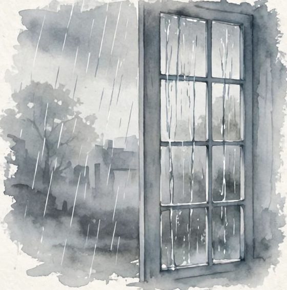
A tall window streaked with rain, grey light gathered beyond the glass.
It comes the way rain comes to a window, without knocking and without asking to be understood. One moment the afternoon is ordinary, and the next there is a pressure in the room that was not there before, a fullness behind the ribs, a sense that something in the inner weather has shifted. Nothing has happened. Nothing needs to have happened. The feeling simply stands in the doorway of the day, unnamed and unhurried, and the house has learned not to demand its papers at the door.
People reach for comparisons first, because comparisons are the nearest furniture. It is like the moment before music starts. It is like remembering a dream in the middle of breakfast. It is like none of these, exactly, and the comparisons are set down again, one by one, with a small apology. The register keeps a page for these failed descriptions, and the page is long, and nobody at the desk is embarrassed by its length. Description failing is not the feeling failing; it is only language arriving at the edge of its own country and reporting, honestly, that the land continues past the fence.
This house was built for that continuation. Its rooms do not solve the feeling, and its keeper does not pretend to read it. The feeling is received the way weather is received by anyone who has lived long in one place: noticed, spoken of briefly, and allowed to be what it is for as long as it stays. What follows in these halls is not an explanation. It is a record of visits, kept carefully, in the belief that a thing can be honored completely without ever being explained at all.
2The House of Inner Weather
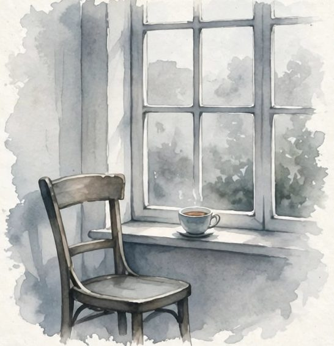
An empty chair beside a tall window, a teacup cooling on the sill in soft grey daylight.
Every house has a climate of its own, whatever the season outside. One room is always a little cooler than the others. One corner holds the afternoon longer. This house takes that homely truth and builds on it deliberately: its halls are arranged not by subject but by weather, so that a visitor walking them walks through pressures and clearings, through the low grey hours and the brief unexpected brightnesses of a life felt from inside. The tour takes as long as the visitor's own weather takes, and no keeper has ever been known to hurry it.
There is a room where it is always about to rain. There is a room where the light comes back after rain, and the furniture is still damp, and nobody apologizes for it. The stairs pass through a landing of permanent early morning. The keeper keeps no instruments more complicated than a chair by the window and a habit of attention, and the register records the day's inner weather in the same plain hand it uses for everything else: arrived before noon, stayed through tea, left without comment.
Visitors sometimes ask which room the feeling lives in, and the answer disappoints them until it doesn't. It does not live in any of them. It passes through all of them, the way weather passes through a valley, belonging to the valley and to none of its fields. The house is not the feeling's home or its hospital or its court. It is only a place built with enough quiet in it that the weather, when it comes, can be sat with properly, at a table, like a guest who has traveled a long way and has nothing to announce.
3It Arrives Without a Name
It does not introduce itself. Other feelings arrive with their credentials in order: grief can point to its occasion, joy can name its news, anger keeps its grievance folded in its pocket, ready to be produced. This one comes in without any of that. It stands in the middle of an ordinary hour, full and unmistakable, and when the household asks what it is called, it has nothing to hand over. The silence that follows is not evasiveness. It is the plain truth of the visit.
The house keeps a drawer of names that have been offered to it over the years, the way one keeps keys that no longer fit any lock in the building. Each was tried in good faith. Each turned the handle partway and stopped. The keeper has stopped apologizing for the drawer. A name is a handle, and a handle is for carrying, and some things are not carried but weathered, the way a roof weathers a long rain without ever learning what to call the water.
So the register enters it the way it enters everything it cannot title: by its hour, its light, and the company it kept. Arrived during the washing up. Present while the letter was being written. Gone before the kettle boiled. These entries look modest beside the grand vocabularies, but they have one virtue the vocabularies lack. They are accurate. The feeling arrived without a name, and the house, after long practice, has learned to receive it on exactly those terms, without treating the missing name as a missing part.
4The Keeper of the Unnamed Feeling
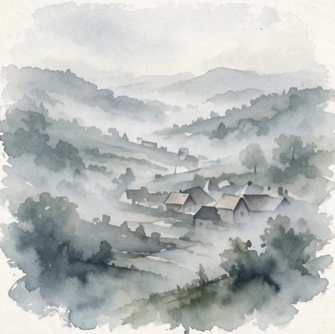
Morning mist lying low over a quiet valley, a few rooftops barely showing through.
The keeper of this house is not a scholar of the feeling and would be the first to refuse the title. The work is custodial, not interpretive: to keep the rooms aired, the chair by the window free, the register open at the right page. When the feeling arrives, the keeper does not rise with a notebook of questions. The kettle is put on. The visit is allowed to take its own shape. This restraint looks like doing nothing, and it is the hardest discipline the house knows.
New visitors occasionally press the keeper for a reading, the way one presses a host about a silent guest. The keeper declines, in the same tone used for declining a second helping that was never offered. What the keeper will say, and it is the whole of the keeper's doctrine in one sentence, is that the feeling has never once needed to be explained to be real, and has never once been improved by being cornered. Beyond that, there is tea, and weather talk, and the long view from the window.
It should be recorded that the keeper has stood in the weather too, as often as anyone, and has no immunity to show for the years of service. The feeling arrives for the keeper as it arrives for the newest guest: unannounced, unnamed, and entirely itself. The only difference experience makes is in the reception. The keeper no longer reaches for the drawer of names. The chair is offered first, and the names, if they come at all, come later and leave earlier, like acquaintances who have learned the house rules.
5Not Sadness, Not Joy
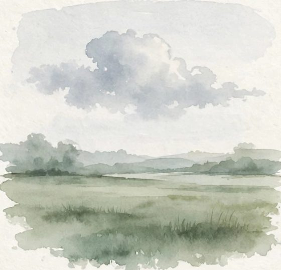
A single soft cloud drifting alone over a still green field.
It is most often mistaken for its neighbors, and the mistakes are understandable, because it borrows a little light from each of them. There is a heaviness in it that resembles sadness, until one looks for sadness's object and finds none. There is a brightness in it that resembles joy, until one looks for joy's news and finds the day exactly as it was. It sits between the known countries, in a small unmarked territory that every traveler has crossed and few have bothered to describe on the way back.
Sadness wants something from the world; it points at an absence. Joy wants something from the world too; it points at a presence. This feeling points at nothing. The register has a note on the matter, written after many visits: it is not a blend of the two, as a mixture of paints would be, because a blend can be separated in the mind back into its colors. This cannot. It is its own color, and the fact that the household's palette has no tube labeled for it is a fact about the palette, not about the color.
The practical consequence is a relief once it is accepted. The visitor stops auditing the day for a cause proportionate to the feeling, stops asking what is wrong or what is right, and lets the hour be what it is: an hour in which the inner weather is doing something that is neither good nor bad news. The house counts this among its small liberations. Not everything that moves in a person is a report on the person's life. Some of it is only the sky, moving, the way skies do, over a field that remains itself.
6A Feeling Is Not a Riddle
A riddle has an answer folded inside it, and the whole pleasure of a riddle is the unfolding. This feeling is not built that way, and the house is firm on the point because so much disappointment flows from the confusion. A visitor who treats the feeling as a riddle will interrogate it, turn it over, shake it gently for the sound of something hidden, and go away persuaded that the answer exists and has merely been withheld. Nothing has been withheld. There was never anything in the box but the box.
The riddle habit is flattering to the solver, which is why it persists. It promises that sufficient cleverness will be rewarded with a key, and that the key will fit some door whose opening will rearrange the furniture of a life. The keeper has watched the expectation come and go across many seasons and keeps the record without triumph: no key has ever been produced. What has been produced, reliably, is the quieter pleasure of the visit itself, available only once the shaking stops. The record on this point is long, and it has never once been contradicted by a later, wiser entry.
To say the feeling is not a riddle is not to say it is meaningless in the way an empty room is meaningless. A room is a room. Weather is weather. The meaning of rain is not hidden inside the rain, waiting for a sufficiently attentive reader; the rain means by falling, on the roof, on the field, on the upturned face. The house applies the same grammar here. The feeling means by happening, fully and briefly, in a life that notices it. That is the entire entry, and the register refuses to pad it.
7It Does Not Ask to Be Solved
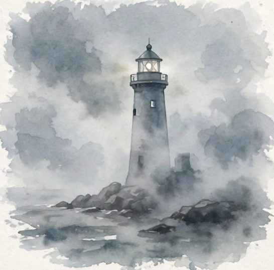
A lighthouse standing in thick fog, its lamp a faint and patient glow.
Some guests arrive with requests, and the house is used to requests: a meal, a bed, an hour of quiet. This one arrives with none. It does not ask to be solved, fed, explained, or sent on its way improved. It asks, if it asks anything at all, only to be allowed the chair it has chosen and the length of its own visit. The household that grasps this early saves itself a great deal of well-meant labor, and the feeling, unhunted, tends to stay its natural length and no longer.
Solving is a noble trade, and the house keeps its tools sharp for the things that belong to that trade: the leak, the ledger, the broken latch. But a tool carried into the wrong room becomes a kind of noise. The wrench has no opinion about the rain. The keeper has seen visitors exhaust a whole evening trying to fix a feeling that was never broken, and the register, noting the hour of their surrender, notes also that the evening improved at exactly that moment, as evenings do when the weather is finally just watched.
What the feeling asks instead is closer to what a landscape asks of a traveler passing through it: not to be improved, only to be crossed attentively. The house has distilled this into a small working rule, taught to every new keeper and written nowhere grander than the inside of a cupboard door. Let it be unsolved, in peace. Most visits, so treated, end the way weather ends, without a verdict, and the room afterward is none the worse for having held something nobody managed to fix.
8The Weather Room
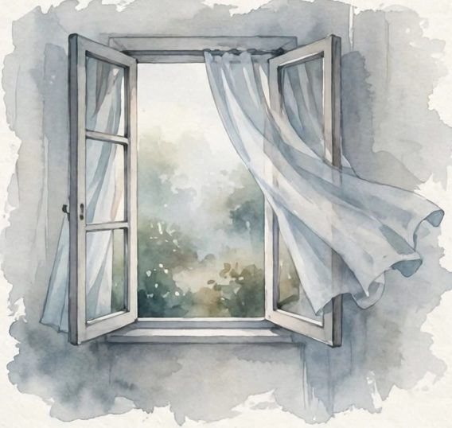
An open window with pale curtains moving gently in a slow breeze.
At the center of the house there is a room kept for no purpose but this one, and it is the plainest room in the building. A chair. A window. A table with nothing on it that asks to be done. The walls have been left the color of early light, and the door is understood by everyone to close quietly and stay closed. When the feeling arrives, the visitor who knows the house goes to the Weather Room the way one goes to the porch when a storm is coming over the hills: to be nearer to it, on purpose.
Nothing in the room explains anything, and that is its entire furnishing policy. There are no charts on the walls, no shelves of authorities, no instruments beyond a kettle within earshot. The room's single technology is duration. It is a place built to the measure of a visit, long enough for the weather to arrive fully, be sat with honestly, and leave in its own time, and its plainness is a form of respect: nothing here will compete with the guest for the visitor's attention. Even the clock, such as it is, keeps its workings to the corridor outside, and is not consulted.
Regulars of the house develop private customs in the Weather Room, and the register does not record them, on principle. Some bring the letter they were writing and set it aside. Some watch the curtains. The room holds all of it without preference. If the house has a heart, the keeper sometimes says, it is not any grand chamber but this small plain one, where a person and an unexplained feeling can be in each other's company without either of them having to perform. The room asks nothing of either party, and in this house that is the highest form of hospitality there is.
9Everyone Has Stood in It
Ask carefully, and it emerges that there is no one who has not stood in this weather. The most articulate households produce the same account as the quietest: a fullness with no address, an hour that felt borrowed from another life, a pressure of something that was not sadness and not joy and refused every name it was offered. The vocabularies differ. The weather does not. The house keeps no census of its visitors, but the keeper's private guess, after many years, is that the register of the unnamed feeling would hold every name there is.
This universality is a comfort of a particular kind. It does not diminish the feeling, the way learning that a view is famous diminishes nothing about standing in front of it. It simply removes the suspicion that the visit is a private defect, a flaw in one person's weather-making. Whole nations, the keeper notes, have built vocabularies trying to catch it, which suggests the feeling has been arriving, unnamed and punctual, since long before there were houses to receive it in. The feeling, on the evidence, is considerably older than the puzzle of what anyone should call it.
And yet each visit is singular, and the house holds both truths without effort. Everyone has stood in the rain; no two rains are the same rain. The feeling that comes to a fisherman at the harbor mouth and the one that comes to a student over a cooling drink are the same weather by every description the desk has ever managed, and entirely different visits by the only measure that finally counts, which is the life they happened in. The register records them separately, and honors them equally, and draws no moral from the arithmetic.
10It Leaves When It Leaves
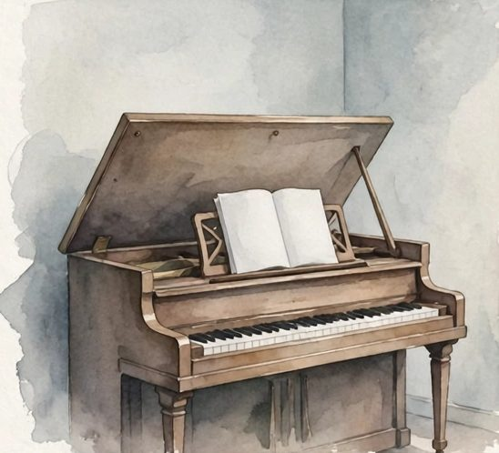
An upright piano with its lid open in a quiet room, blank pages waiting on its stand.
No bell announces its leaving, and no one at the desk can say, afterward, the exact minute it went. The visitor looks up from the window and the room is ordinary again, the pressure gone, the afternoon restored to its usual dimensions. It leaves the way it arrives: without paperwork. Sometimes it thins slowly, the way fog thins, so gradually that the moment of clearing cannot be pointed to. Sometimes it is simply absent, discovered missing like a guest who has slipped away from a party and left the evening better for not making a ceremony of goodbye.
Visitors who have tried to detain it past its time report the same small failure. A feeling held by force changes its nature in the hand, the way a note held past its length stops being music and becomes only sound. The house does not forbid the attempt; it merely records the results, season after season, in the same patient hand. What is let go keeps its shape in memory. What is clutched tends to leave behind nothing but the memory of clutching. The house has never found a third outcome in all its seasons of keeping score, and has stopped expecting one.
There is a discipline in this that the keeper ranks above all the house's other teachings, because it cannot be performed, only practiced. To let the feeling leave without a summary, without extracting a promise of return or an account of where it has been, is to treat it as weather all the way down. It leaves when it leaves. The chair is emptied, the cup is washed, and the register's entry closes with the plainest line in the book: stayed a while, went, nothing owed on either side.
11Not Every Feeling Reports
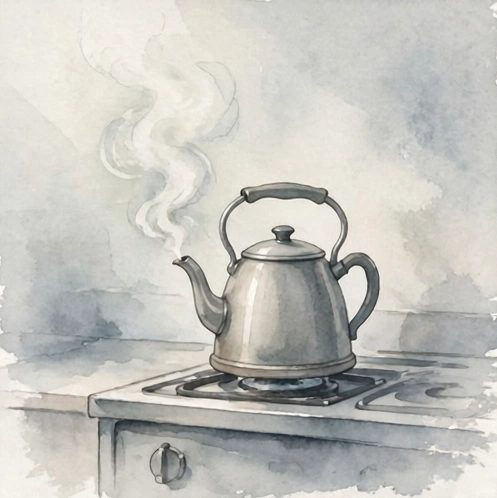
A kettle on a stove with a gentle plume of steam rising in soft morning light.
The household is full of feelings that file their reports in good order, and the desk is grateful for them, because they make the register easy to keep. Joy reports its occasion. Grief reports its loss. Even anger, for all its weather, will usually name the hour it started and the sentence that started it. The feeling this house was built for belongs to the other kind: the kind that does not report. It arrives unfiled, stays unminuted, and leaves the page of its visit almost entirely to the keeper's plain notation of light and hour.
It is tempting to treat a non-reporting feeling as an incomplete one, as though the visit were a letter that never got written. The house resists the temptation on the evidence of long acquaintance. Some of the fullest hours in the register are the ones with the least explanation attached to them, and some of the most documented feelings, pinned and labeled on arrival, turned out to be the thinnest guests of all. Reporting is a talent some feelings have. It is not a measure of their substance.
So the desk keeps a standing instruction for its keepers, passed down with the keys. Do not promote a feeling for explaining itself, and do not demote one for silence. The kettle sings and cannot say why the water sings at the boil and not before, and nobody holds the silence against the kettle. A life, like a house, is mostly unreported weather. This hall simply keeps one room where that fact is not treated as a failure of the record, but as the record itself, kept honestly.
12The First Rule of the Unnamed Feeling
Every house that lasts develops one rule that the others hang from, and this house is no exception. It is not written over the door, because the door is where weather comes in and the house dislikes instructions at thresholds. It is taught instead by example, keeper to keeper, and it can be given in a single breath: when the feeling arrives, offer it a chair before offering it a question. Everything in these halls, all hundred and twenty rooms of them, is commentary on that one sentence.
The order matters more than the furniture. A question asked first puts the guest in the position of a witness, and a feeling examined like a witness learns to perform or to hide. A chair offered first puts the household in the position of hosts, which is the truer position, since the feeling is in fact visiting and the life is in fact the house it is visiting. The questions are not banned. They are merely demoted to their proper hour, which is later, and by later the feeling has usually answered the only one that mattered, simply by staying awhile in good company.
Visitors who learn the rule in this house tend to smuggle it home, and the desk approves the smuggling. It travels well because it asks so little: a pause, a seat, a kettle, a willingness to let the first minutes of a visit belong to the visitor. The keeper's closing note on the rule is characteristic, and the register preserves it in full. The rule has never once made a feeling stay longer than it wanted. It has only ever made the staying better, and the leaving cleaner, and the room quieter afterward.
13Where It Comes From
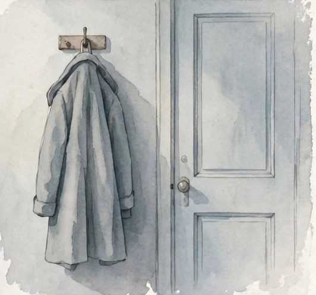
A coat hanging on a hook beside a door, held in pale and quiet light.
The second hall of the house is given to origins, and it is the hall where visitors walk slowest, because everyone arrives at it carrying a theory. It came from the letter, they say, or from the journey, or from the year turning. The keeper listens to all of it with genuine respect, and then shows them the register, where the entries refuse to line up behind any single door. The feeling has come in fair weather and foul, in company and in solitude, at celebrations and at sinks full of washing up, with an even-handedness that defeats every theory in the drawer.
This is not to say origins are nothing. A coat by the door explains how someone is dressed for the day; it does not explain the day. The house keeps a useful distinction framed in this hall: there is the weather, and there is whatever the weather happened to be crossing when it was noticed. The crossing point is real, and the register notes it faithfully. But a valley is not the cause of the wind that moves through it, and the hour when a feeling was first felt is not, without further evidence, the factory where it was made.
By the end of the hall most visitors have set their theories down, not in defeat but in something closer to relief. A feeling with no forwarding address cannot be written to, argued with, or billed. It can only be hosted. The keeper's note at the hall's end is the shortest in the book and the one most often copied out by departing guests: we know where it was standing when we noticed it. That is all we know, and it is enough to furnish a room.
14From a Song Half-Heard
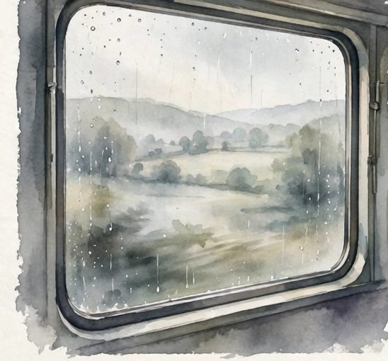
A train window with soft blurred countryside passing slowly beyond the glass.
It has a known fondness for music it cannot quite hear. A song through a wall, a tune from a passing carriage, three notes of something in a shop doorway before the door closes: the fragments do what whole symphonies fail to do, and the room fills with the feeling as if someone had opened a window in winter. The register has stopped being surprised by the pattern. What is half-heard leaves the greater part of the work to the listener, and the listener, unobserved, does the work out of materials that no composer supplied.
The song itself is usually innocent, and the desk is careful to acquit it. Played again later, in full, in good light, it is often a perfectly ordinary song, and the visitor laughs at the ordinariness with a gratitude that has an edge of disappointment in it. The feeling was not in the recording. It was in the hearing, in the one-time collaboration between a drifting tune and an unguarded minute. That is why it cannot be replayed on demand, and why the house advises against building a collection around the attempt.
What the half-heard song teaches, the keeper says, is the geography of the threshold. The feeling prefers doorways: between rooms, between the tune and its name, between the journey's middle and anywhere that could be called arrival. It is a creature of almosts. A song fully known is a possession. A song half-heard is a visit, and visits are this house's whole business. The blurred fields beyond a train window belong to the same family: a country one is passing through at exactly the speed of not being able to stop, and the heart, unconsulted, reaches for it anyway.
15From a Smell of Another Year
Of all the doors it uses, smell is the least guarded, because nothing in a person expects to be ambushed by a scent and so nothing stands watch there. Woodsmoke on a cold street. A particular soap in a strange house. Rain on hot stone, the smell of a school corridor, a spice in a market that a grandmother's kitchen used to produce without effort. The feeling arrives through this door at full strength before the mind has even identified the smell, let alone filed it, and the register's entries for these visits are among the most honest in the book.
The smell is from another year, and that is the whole of its power and the whole of its innocence. It does not argue that the year was better. It does not argue anything. It simply proves, for the length of one breath, that the past is not a country one reads about but a room one can be standing in, briefly, with the light coming through its windows. Then the breath ends. The street is the street again. But the feeling, having been let in by the smell, stays its usual while, sitting with the visitor in the present tense like a guest who arrived by an unlocked side door.
The keeper's advice on these visits is the house's usual advice, with one addition. Do not chase the smell. Visitors have been known to follow a scent down streets and into shops, trying to buy their way back into the room it opened, and the register records the chase as the one reliable method of losing both the smell and the feeling at once. What came unbidden leaves unbiddably. The open drawer keeps its herbs whether or not anyone crosses the room to close it, and the house finds the arrangement satisfactory.
The Feeling Desk
One desk receives all correspondence for this house — questions, corrections, and word of any feeling a visitor cannot explain: where it came from, what it resembled, how long it stayed. It is read in the order it arrives, and nothing sent to it is diagnosed, interpreted, or explained back.
16From Light at a Certain Hour
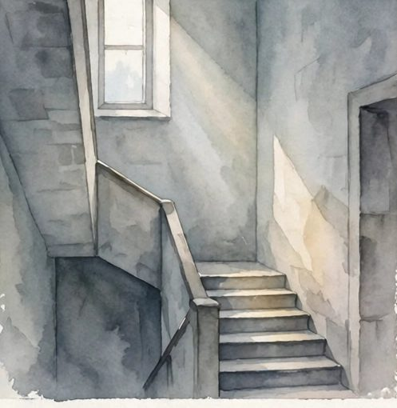
A stairwell with a single shaft of light falling from a high window.
There is an hour, different for different houses, when the light does something it does at no other time, and the feeling has learned that hour in every household it visits. Late afternoon laying itself along a stairwell. Morning arriving sideways through a kitchen that faces the wrong way for mornings. The blue minute before lamps, when the windows stop reflecting the garden and start reflecting the room. The register, which notes the light for every visit, could nearly be read as a diary of these hours with the feeling left out, and it would still be recognizable as this house's book.
Light at a certain hour is not an explanation, and the keeper guards the distinction carefully in this room. The light does not cause the feeling the way a draught causes a candle to lean. It is better understood as the feeling's preferred weather for arriving: the visibility in which it can be seen most plainly, the way certain birds are only ever noticed at dusk though they have been in the garden all day. Knowing the hour does not summon the visit. It only means that when the visit comes, the visitor is likelier to be looking out of the right window.
Regulars arrange small devotions around the hour without ever calling them that. The chair is turned a fraction. The walk is timed to the long light on the hill. The desk pretends not to notice, and the register, on those pages, records the light twice: once as it was, and once as it was waited for. There are worse ways to organize an afternoon. The feeling, for its part, keeps its own counsel about appointments, and arrives at its hour or not at all, in the freedom that the whole house exists to protect.
17From a Place Never Visited
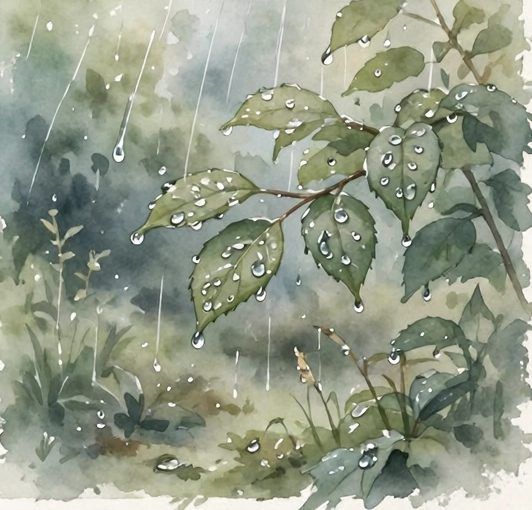
A garden just after rain, droplets shining quietly on green leaves.
Strangest of its doors, and one the register has learned to enter without comment, is the place that was never visited at all. A coastline seen in a photograph decades ago. A city described once by a stranger on a train. A valley in a book, a harbor in the background of someone else's story. The feeling rises from these unvisited places with the full authority of homesickness, though the visitor has no home there and never did, and the house, after many such entries, has stopped treating the impossibility as an objection.
A place never visited has one advantage over every real address: it has never disappointed. No weather has closed it, no season has found it shabby, no return has been necessary. It exists at the exact ripeness of the first imagining, and the feeling that rises from it is correspondingly pure, unmixed with the compromises of actual travel. The keeper is careful to add that real places produce the feeling too, abundantly, and often. But the unvisited place produces it in its most distilled form, because there the geography is made entirely of longing, and longing is the feeling's native soil.
The desk's ruling on such visits is gentle and final. The place does not have to exist for the visit to be real, any more than a garden after rain has to be explained for the leaves to shine. Whether the coastline could ever be traveled to is a question for another kind of house. This one records the arrival, offers the chair, and lets the unvisited place keep its perfection at the distance where perfection is possible. Some addresses, the register notes, are complete precisely because no road has ever been built to them.
18From Someone Else's Laughter
It slips in, more often than any theory predicts, through other people's happiness overheard. Laughter from a garden wall one is passing. A table of strangers in high spirits on the far side of a room. Friends of friends arriving at a joke in a language half-understood, in a kitchen where one is only the guest who brought the wine. The feeling rises at exactly the moment when joy is nearest and least one's own, and the house, which has audited many such visits, finds no malice in the arrangement at all.
The laughter is not the cause; the desk is precise on this, as it is on all origins. The same laughter on another evening is only pleasant. What differs is the listening. There are hours when a person stands slightly outside the lit circle of the world's contentment, not excluded, not envious, merely adjacent, and in that adjacency the feeling finds its clearest acoustics. It is the sound a room makes through a wall: warmth, known to be real, arriving as weather rather than as invitation.
Visitors sometimes worry that the feeling indicts them, that it means they begrudge the laughers their evening. The register's long answer is that it means nothing of the kind, and the short answer is the keeper's: the feeling is not a comment on the laughter or on the listener. It is what an open window is in a warm house, a reminder that air moves between inside and outside whether or not anyone planned the ventilation. The laughter goes on being delightful. The feeling sits its while. Both are allowed to be true at once, in the same hour, in the same listener, without either canceling the other.
19From a Dream Already Forgotten
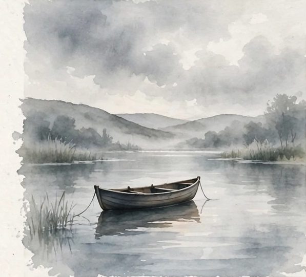
A small boat resting on a still lake under low grey cloud.
Some mornings a person wakes with the feeling already in the room, installed before consciousness, like furniture moved in the night by considerate hands. The dream that carried it is gone. Not faded at the edges in the usual way but gone entire, leaving only its temperature behind: a conviction, without any evidence attached, that something was visited in the night and mattered. The register has a whole shelf for these visits, and their entries are the shortest in the house: arrived before waking. Source unavailable. Stayed until breakfast, most of it.
The desk refuses, on principle, to go digging for the dream. Reconstruction is a respectable trade, but its products are fictions wearing the dream's coat, and a fiction will answer questions the original never posed. What can be said honestly is small and sufficient: the mind, in the night, went somewhere and came back changed in weather, the way a boat comes back to a still lake with its hull wet from water nobody saw it cross. The wet hull is a fact. The voyage is not available for interview.
Visitors who learn to receive these morning visits without an excavation report the same modest improvement the house always promises and never guarantees: the morning is allowed to be what it arrived as. The feeling sits through the tea and the dressing and the first tasks, unexplained and unhurried, and usually dissolves somewhere in the ordinary machinery of the day, leaving nothing behind but a faintly heightened attention to the light. The register closes the entry without regret. A dream already forgotten has still done its errand, which was never to be remembered. It was to be weathered.
20From the Body, Without Comment
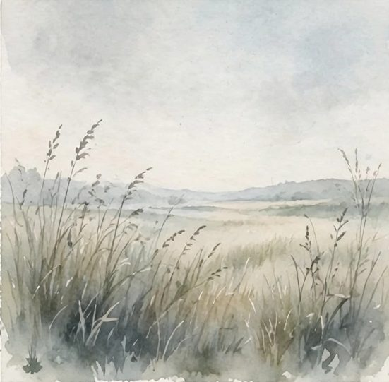
A field of tall grass standing quiet under a wide pale sky.
The body keeps its own weather and does not always file a report with the rest of the household. A tiredness that is not sleepiness. A lightness after a long illness ends. The strange brightness of a fever cooling, or of hunger after plain food, or of standing up from a sickbed to find the room unchanged and entirely new. The feeling arrives through the body on such occasions with a matter-of-factness that embarrasses every theory of origins: it simply comes with the flesh's turning seasons, and asks to be treated as one treats them, without ceremony and without suspicion.
The house is careful here, and its care is a point of doctrine. The feeling that arrives through the body is received as weather, not as a bulletin. The register records it the way it records rain: factually, and without pretending the rain is a letter. A body is a house's ground floor, and the ground floor floods and dries on schedules the upper rooms do not set. The keeper's whole art, on these visits, is to keep the upper rooms calm while the ground floor does its seasonal work, and to let the visit end when the water goes down.
There is a humility in this origin that the keeper ranks among the feeling's best teachings. Not everything in a person is a text. Some of it is tall grass: it grows, it leans in the wind from directions no one surveyed, it stands again. A life that insists on interpreting every movement of its own grass will spend the summer indoors with the curtains drawn, annotating. The house prefers the field left open and the sky left wide, and the feeling, so often arriving from exactly there, seems by its frequency to approve the arrangement.
21From Nothing, Apparently
The most honest entries in the register are the embarrassing ones: the visits with no origin anyone can find. Not a song, not a smell, not an hour of significant light. A Tuesday. A cleared table. A mind on its ordinary errands, and then the feeling, present and entire, like weather that has formed directly overhead out of a sky that gave no warning. The keeper used to write apparently beside these entries, in pencil, and the pencil has long since been promoted to ink, because the word has proved to be the most accurate instrument the desk owns.
Apparently is a scholar's word and deserves its promotion. It marks the exact border of the known. Before it: a calm day, an unremarkable hour, a life proceeding along its rails. After it: the border itself, and beyond the border the feeling, standing in a country the household has not surveyed. To write apparently is not to give up. It is to survey honestly, to stake the boundary where the boundary actually runs instead of where pride would prefer it, and the register's maps are trusted by its visitors precisely because the desk stakes them so plainly.
The house draws a conclusion from these entries, though it holds the conclusion loosely, the way it holds everything. A feeling that comes from nothing apparent may simply be the weather doing what weather does in a living climate: forming, because forming is its nature, out of pressures too widely distributed for any household instrument to read. Rain does not require an occasion. It requires only a sky. The register's final note on the matter is the keeper's own, and it closes the hall of origins with a shrug that took thirty years to earn: from nothing, apparently. From everything, possibly. The chair is ready either way.
22From Everything, Quietly
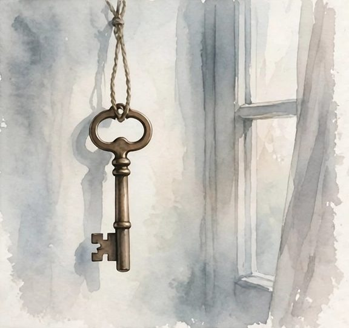
An old key hanging on a string beside a window in soft light.
There is a second school of entry at the desk, opposite to the first and equally represented, and its entries read like inventories. The feeling came, these visitors say, from everything: from the year and the weather in it, from the accumulated afternoons, from being the age one is, in the place one is, with the history one has, all of it arriving at once at a low pressure that the chest registered before the mind had finished its sentence. The register does not argue. An inventory is not an explanation either, but it has the great virtue of being true in every line.
Everything, quietly, is the sound this origin makes. Nothing in it announces itself. No single item on the list is dramatic enough to be promoted to cause, and the desk has a rule against promotions of that kind, earned from long auditing: the item that most wants to be the cause is usually only the most recent. The whole accumulation leans, the way snow leans on a roof, in silence, distributed, until the structure of an ordinary hour registers the weight as a feeling with no name and no single author.
The house prefers this school, if it prefers any, for one practical reason. A visitor who believes the feeling came from everything stops hunting for the one thing, and the hunting was always the exhausting part. What remains, once the hunt is called off, is the visit itself, which can then be sat with in the usual way. An old key hangs by the window in this room of the house, fitting no lock the present keepers know of. It is kept not because it opens anything but because it once did, and because a household that throws away all its unexplained objects soon finds it has thrown away most of its history.
23The Trigger Is Not the Cause
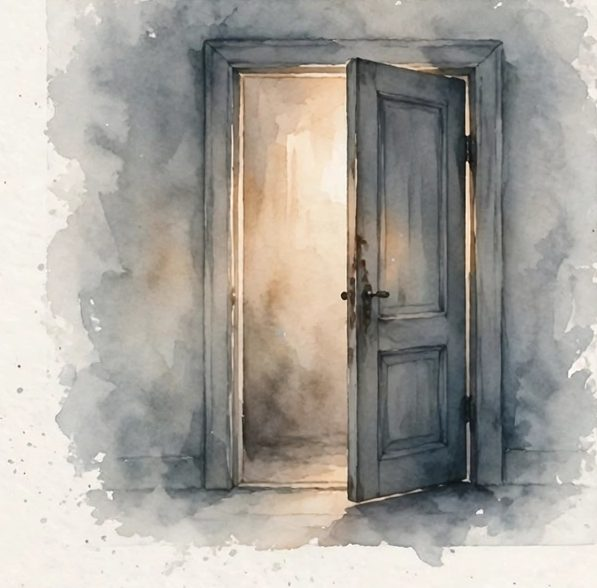
A half-open door with warm light waiting quietly beyond it.
This room of the house exists because of a single confusion, which the register fights in every generation of visitors: the confusion of the trigger with the cause. The song, the smell, the hour of light — these are triggers, and the desk honors them as such. A trigger is the last small thing, the latch lifted, the door found already ajar. But a door is not the weather on the other side of it, and the household that blames the latch for the climate will spend its life oiling latches while the sky does exactly as it pleases overhead.
The distinction sounds fine and proves, in practice, to be the difference between peace and a feud. Blame the song, and the song must be avoided, and soon half the world's music is under suspicion. Blame the hour, and the afternoons are spoiled in advance. The house has watched visitors build entire systems of avoidance on a trigger mistaken for a cause, and the register's margins, in the keeper's patient hand, repeat the same small correction until it takes: the feeling was already in the house. The trigger only showed you which room.
None of this demotes the trigger to nothing. The half-open door matters; the warm light beyond it is real light, and the hour a feeling is first noticed is worth its line in the book. The desk only insists on proportion. Note the trigger. Thank it, even, for its information. Then turn and face the actual weather, which is older than the door, larger than the doorway, and entirely uninterested in being managed by the management of doors. The house keeps its latches oiled anyway, out of general tidiness, and its expectations of them modest, out of general wisdom.
24It Owes No Explanation of Origin
The hall of origins ends, as perhaps every honest inquiry should, with a declaration of the feeling's rights. It owes no explanation of origin. It is not a witness under summons. Its silence about where it came from is not an obstruction of the household's justice, because the household has no justice to administer here, only weather to record. The register states the principle plainly because so much unnecessary sorrow has come from assuming the opposite: from believing that an unexplained arrival is an arrival in default of something owed.
Consider how the demand sounds applied anywhere else. The rain is not asked for its itinerary. The evening is not billed for arriving. A guest who crossed a valley to reach the house is offered the chair first and the story of the road afterward, if the guest feels like telling it, and most of the road stories in the register are half the length their tellers expected, because hospitality had already done the work the interrogation was meant to do. The feeling's origins belong to the feeling. What belongs to the household is the visit, and the visit is enough to fill a register honestly.
Visitors leaving this hall sometimes feel they have been given less than they came for, and the keeper, who has watched the feeling come and go for many years, offers them the house's last word on origins with the air of a person handing over the best tool in the building. You do not need to know where weather comes from to dress for it, shelter from it, or sit at the window and watch it with your whole attention. The letter stays folded. The desk stays open. The feeling, unexplained in its beginnings as in everything else, is given the chair — which is where the next hall begins: not with where it comes from, but with what, in the plainest words available, it is like.
25What It Feels Like
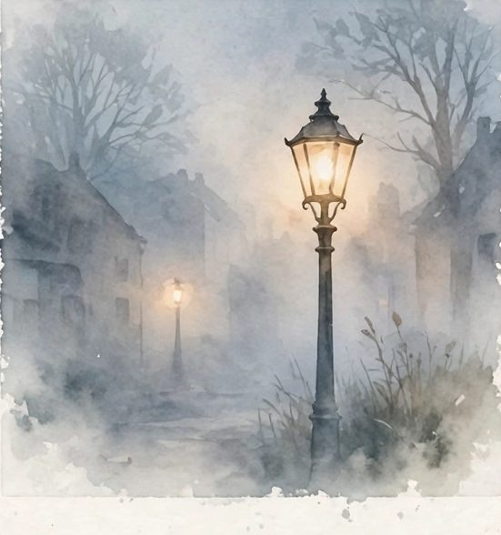
A street lamp glowing quietly in evening fog.
The third hall attempts the hardest work in the house: not explaining the feeling, which the house has renounced, but describing it, which it has not. Description is the humbler art and the more useful one. A visitor who cannot say what the feeling is may still, with practice, say what it is like, at what hours it thickens, how it sits in the chest, and the register's pages in this hall are the most thumbed in the building because they offer recognition instead of theory. Recognition, the keeper says, is what most visitors actually came for.
It feels, first, like a change in the light inside a familiar room: nothing moved, everything altered. It feels like a pressure with no weather behind it that anyone can find. It feels like standing in fog with a lamp lit somewhere near at hand: the immediate world clear enough, everything beyond a few paces dissolved into a kind of luminous uncertainty that is not frightening, exactly, and not comforting, exactly, but complete. The entries differ in their images and agree in their structure: something ordinary, transfigured slightly, refusing to say by what.
The desk teaches its keepers one rule for this hall, and it is the rule of the almost. Every description here is offered as an approximation and corrected by the next visitor, and the corrections never converge on a final wording, and the house has decided to regard that not as failure but as fidelity. A feeling that could be finished described would be a smaller feeling than the one that keeps arriving. What follows in this hall is a set of near descriptions, kept the way one keeps sketches of a coastline: none of them the coast, all of them useful for navigation.
26A Room Somewhere Is Open
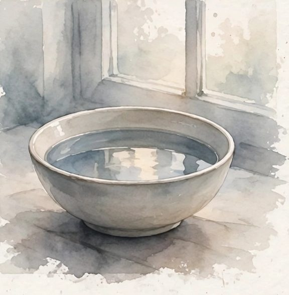
A plain bowl of still water on a table, reflecting the window light.
Ask a room of visitors for their plainest account and this is the image that returns most often, in household after household, as if the feeling carried it with it through the door. Somewhere, the visitor says, a room is open. Not this room. A room in a house never lived in, or lived in so long ago that its address has been lost, with its door standing open and its air undisturbed, and the strange part is not sadness that one is not in it. The strange part is the certainty, entire and unjustified, that the room exists and that its being open has something to do with oneself.
The house has learned not to furnish this room for its visitors. Attempts have been made: a childhood bedroom proposed, a grandmother's parlor, a flat from a road not taken. Each furnishing shrinks the feeling, and the visitors themselves strike the furniture out again, gently, the way one corrects a drawing that has become too specific to be true. The room works precisely because it is unentered and unexamined, a stillness at the center of the image, the way the water in a bowl holds the window's light without needing to know anything about the weather outside.
What the image finally says, the register suggests, is something simple about the shape of a life. A life is a house with more rooms than its tenant has visited. Most days the unvisited rooms make no sound at all. Then, on an ordinary afternoon, one of them is discovered to be standing open, and the discovery registers as this feeling: not a summons, not a regret, just the knowledge, passing through the body like light through a hall, that the house is larger than the life being lived in it. The door is not closed again afterward. That, too, is recorded. It does not need to be. It only needs to have been noticed, once, standing open.
27Homesick for a Place Not Lived In
Of all the near descriptions in this hall, the one visitors correct least is also the most impossible: homesick, for a place one has never lived. The homesickness is genuine in every particular. It has the ache, the direction, the faint pull toward a there that feels more native than here. Only the address is missing, and the address, on inspection, never existed. The register stopped flagging these entries as errors many years ago. It flags them now as the hall's most reliable reports.
Homesickness is usually evidence, and evidence can be followed: the town, the house, the kitchen table, all findable on a map and most of them visitable in a car. This variety points and cannot be followed, and the house has come to think the pointing is the whole of it. The feeling indicates a direction the way a compass indicates north in a country where north is only a bearing and never a destination. One does not walk to a bearing. One steers by it, briefly, and is steadied, and the steadiness is the use of it.
The keeper's note in this room is addressed to the visitors who grieve the impossibility hardest, and it is characteristic of the house in its refusal to either mock or inflate. The place not lived in is not owed to you, and you are not exiled from it. It is the mind's way of saying that belonging is a larger country than biography. Across grey water, a far shore can be doing nothing but existing, distantly, in poor light, and still draw the eye the whole afternoon. The homesickness is the eye's honesty. The register records it, and the house lets the shore stay unvisited, and strangely, that is usually enough for the feeling to complete its visit and go.
28Glad and Grieving at Once
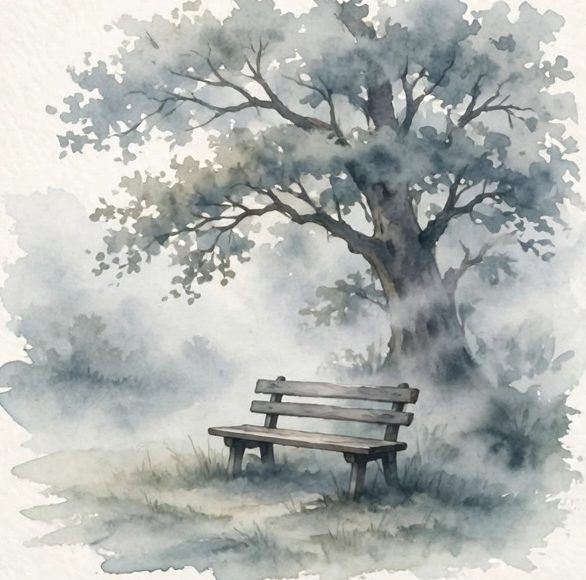
A wooden bench under a large tree, held in soft morning mist.
Visitors arrive at this room apologizing for a contradiction, and the house's first service is to strike the apology from the record. The feeling, in one of its commonest forms, is gladness and grief occupying the same chest at the same hour, neither diluting the other, and the visitors' mistake is only the belief that the heart is a room with one chair. It is not, the register notes. It is more like a bench under a tree in morning mist: wide enough for both, and frequently occupied by both, in a silence that does not require them to agree.
The gladness is real gladness. The world, at that moment, is genuinely more than sufficient: the light, the company, the evidence of being alive in the middle of an ordinary day. The grief is real grief, though it keeps declining to name its object, gesturing instead at the general facts: that the day will end, that the company will scatter, that everything sufficient is also temporary. Both reports are accurate. The feeling is what arises when both are read aloud at once, in the same voice, without either being asked to wait outside.
The house refuses to call this mixture confusion. Confusion is a failure to tell two things apart, and the visitors in this room can tell gladness and grief apart perfectly well; that is precisely their situation. What they cannot do is make the two take turns, and the register, after many entries, suggests that taking turns was never the arrangement. The heart's weather is not a debate with one speaker recognized at a time. It is a climate, and climates are allowed their mixtures. The mist does not apologize for softening the tree and the bench in the same hour.
29A Pull Toward No Direction
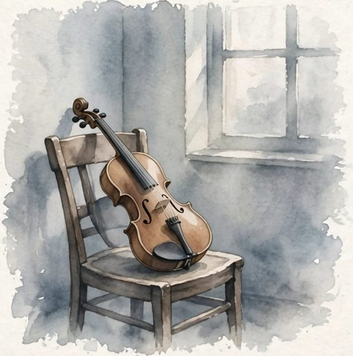
A violin resting on a chair in a quiet room, grey light at the window.
There is a form of the feeling that visitors describe with their hands, turning them slowly in the air, as if indicating a compass whose needle has come loose from its duty. A pull, they say — unmistakably a pull, toward — and here the hand gives up, because the pull has no direction in it. Not toward a person, a place, a task, or a door. Toward, full stop. The register enters these visits with particular care, because they are the ones most often misreported afterward as restlessness, and they are not restlessness. Restlessness wants to move. This wants only to lean.
A violin resting on a chair will sometimes give off, if the room is quiet and the light is right, the faintest hum when a floorboard settles or a cart passes: a string answering a tremor in the house it was not played by. The keeper uses the instrument as this room's teaching object, gently, and never in the visitor's hearing as an explanation. Some things in a person are tuned. Tuning is not a message from the tuner. A string that answers the room is doing what a string is for, and a heart that leans toward nothing in particular may be doing nothing more mysterious than resonating at its natural pitch in a world full of weather.
The desk's advice for the pull is the house's advice in its purest form: do not immediately convert it into an errand. The pull does not become truer by being obeyed into motion, nor falser by being sat with until it fades. It is weather with a direction missing, and the missing direction is part of its description, not a defect in it. Visitors who let it lean, unacted on, report that it completes itself the way a held note completes itself: not by resolving, but by being fully sounded for exactly its length, and then by the honest silence afterward.
30The Edge of Almost-Crying
It lives, in one of its most recognizable forms, exactly at the edge of tears that do not fall. Not sorrow gathering. Not joy overflowing. A fullness at the brim, held by a surface tension the visitor can feel precisely, in the throat and behind the eyes, at a piece of music, at a stranger's kindness reported at second hand, at nothing, at the light. The register's entries for these visits are brief because the visitors themselves are brief, aware that description, pursued too far, disturbs the very balance they are describing.
Almost-crying embarrasses people out of proportion to its size, and the house has a theory about the embarrassment, offered as housekeeping rather than doctrine. Tears are social currency; they are expected to be spent on something, and a fullness that purchases nothing feels like a debt. But the brim is not a debt. A glass filled exactly to the surface has not failed to spill. It is complete at its level, and the feeling at the edge of crying is complete in the same way: a capacity discovered, briefly, to be larger than the day required, and noticed in the noticing.
The keeper's practice in this room is mostly silence, and the register follows it. What can be said has been said by the visitors themselves, in fragments the desk preserves without improving: it was nothing. I was fine. It passed. These are accurate reports. The edge holds for a minute, or ten, and then the ordinary swallows of the day lower the level by fractions, and the visitor returns to the errands with the odd dignity of having almost wept at the world's plain existence. The house counts the visit a success in its bookkeeping, because nothing was forced and nothing was spilled, and the brim, for a moment, showed a person the exact measure of their own depth.
The Feeling Desk
One desk receives all correspondence for this house — questions, corrections, and word of any feeling a visitor cannot explain: where it came from, what it resembled, how long it stayed. It is read in the order it arrives, and nothing sent to it is diagnosed, interpreted, or explained back.
31A Lightness With Weight in It
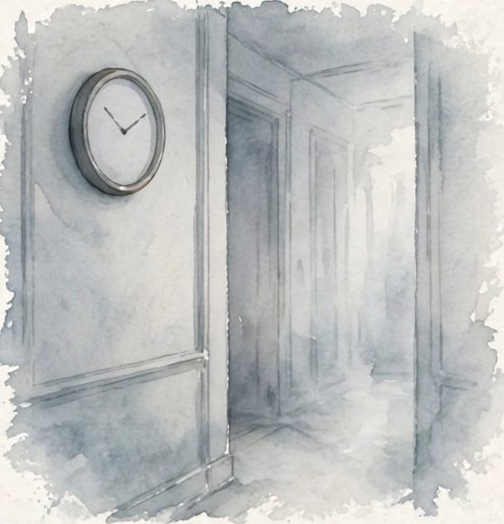
A round wall clock with a completely plain face and no markings, keeping calm time in a hallway.
The paradox entries are the register's favorites, and this is among the most entered: a lightness, the visitors say, with weight in it. The step is buoyant and the chest is ballasted, both at once, as if the day had been filled with a gas heavier than air that somehow lifts. Attempts to resolve the paradox into one term or the other are recorded and then, at the visitor's own later request, usually struck through. The feeling insists on both adjectives, and the house, which has learned to take dictation rather than give it, writes both down.
There is a clock in the hallway of this room with a face entirely plain, no numerals, no marks, and visitors ask about it more than about any furnishing in the hall. It keeps time without dividing it into anything that can be pointed to. The keeper explains, when pressed, that some hours are like that: fully real, measurably passing, and impossible to read off in units. The lightness with weight in it keeps that kind of time. It is an hour with gravity and no schedule, and the body, which is a better clock than the mind, registers it without needing the face explained.
What the lightness means, if the house were forced to gloss it, is something like this: a person briefly relieved of the duty of being only one thing. The weight is the life, entire, with its losses and obligations, not set down for a moment. The lightness is the discovery that the entire life can be carried, for the length of a visit, without the stoop. Both are true at once and neither cancels. The register closes these entries with a formula of its own devising, kept for this room alone: carried, and carried lightly, and no explanation filed.
32Being Expected Somewhere Else
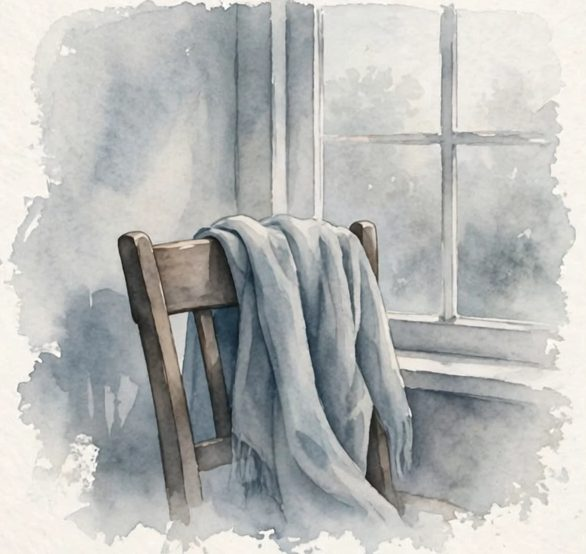
A soft scarf draped over the back of a chair beside a window.
A quieter form, and the one visitors are shyest to report, is the sense of being expected somewhere else. Not missed. Not late. Simply expected, at an hour that has no clock, in a place that has no address, by a company the visitor could not describe if the house's whole register depended on it. It arrives in the middle of perfectly adequate company, which is what makes it shy-making: nothing here is lacking. The scarf is on the chair, the chair is by the window, the afternoon is proceeding. And yet the feeling stands in the room like a second appointment, kept elsewhere, by a self that is somehow also oneself.
The house treats this form with particular gentleness because it is so easily slandered. It is not discontent; the visitors are unanimous that the room they are in is good. It is not a summons; nobody, on examination, wants to get up and go anywhere findable. It is closer to the experience of hearing one's name in a crowd and turning, once, before remembering that crowds are full of names. Something in a person, the register proposes, keeps a standing sense of a larger gathering to which the whole of life is, in some way not yet scheduled, adjacent.
The keeper lets the appointment stand unkept, and the register backs the keeper. An expectation that cannot be located cannot be missed, and a visit spent apologizing to an address-less elsewhere wastes the actual room, which deserved better. What the feeling asks, in this form as in all its forms, is only acknowledgment: noted, not obeyed. The visitors who learn to nod to it — somewhere, yes, presumably, in due course — find it loses its power to hollow out the present hour, and becomes instead a kind of depth in it, the way a window gives a room more than its walls.
33The Feeling of a Word on the Tongue
Every visitor knows the small state the mind enters over a word that will not come: the word is there, its shape is known, its first letter is almost available, and the whole apparatus of memory leans toward a door that will not open on demand. The feeling this house keeps is that state, enlarged to the size of a whole hour and loosened from any particular word. Something is on the tongue of the life. It has a shape. It will not come. And the leaning-toward, sustained and unrewarded, is the visit itself, in one of its most exact descriptions.
The comparison is more than a comparison, the keeper believes, because it captures the feeling's peculiar mixture of nearness and refusal. A word on the tongue is not absent; it is more present, in its way, than most words that arrive on time, because the mind circles it, tests its edges, knows it by its silhouette. So with the feeling. Visitors circle it with descriptions, and the circling is not failure but acquaintance, the same acquaintance one has with the unnameable word: intimate, incomplete, and entirely genuine. The register's entries are the record of many such circlings, none final, all faithful.
And the comparison carries the house's consolation inside it, ready-made. The word on the tongue usually returns when the straining stops, in the middle of some unrelated errand, offered up by a mind that works best unobserved. The feeling, likewise, is most itself when the household stops demanding its name — which is not a technique for summoning explanations but the house's plain observation, entered here for the next hall's use. What is on the tongue of a life does not owe the life its arrival schedule. The cup is empty, the spoon is resting, and the word, when it comes, will come the way weather comes: because it is ready, and not a moment at the household's convenience.
34A Weather Front Crossing
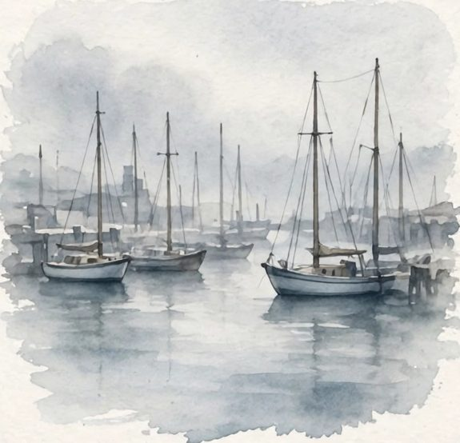
A harbor held in grey stillness, masts standing quiet in the mist.
The most physical of the near descriptions is also the oldest in the register: the feeling as a front crossing. Visitors with no poetry in their usual speech reach for meteorology here, unprompted, and the desk lets them, because the fit is exact in every particular that matters. A front has a leading edge, felt in the joints and the temper of the light before anything can be pointed to in the sky. It crosses at its own speed. It changes the pressure of the whole country it passes over, and then it is past, and the country is itself again, unaltered in every boundary and briefly, memorably, under different air.
In a harbor, a front announces itself in the rigging before the water moves: a change in the sound, a restlessness among the masts, gulls repositioning on no visible instruction. The body keeps a rigging of its own, and many visitors report the feeling first as exactly that: a change in the sound of the self, small, distributed, undeniable, hours before they would have said anything was happening at all. The house records these reports without promoting them into doctrine. The front is an image, and images are this hall's currency. But it is the image the desk reaches for when a visitor asks for the plainest account available.
What the front teaches, better than any other description in the hall, is scale. A front is not about the street it crosses. It does not arrange itself for one household's afternoon, and it cannot be argued down to personal size without losing the one thing the description exists to convey: that the feeling, while felt entirely in one chest, has the impersonality of weather everywhere. It crosses. It has crossed others before, on other coasts, in other centuries of the same sky. The visitor is not its author and not its target, only its current coastline, and the register finds, season after season, that visitors set down half their burden at exactly this entry, because a coastline is not blamed for the weather that crosses it.
35Too Large for the Chest, Briefly
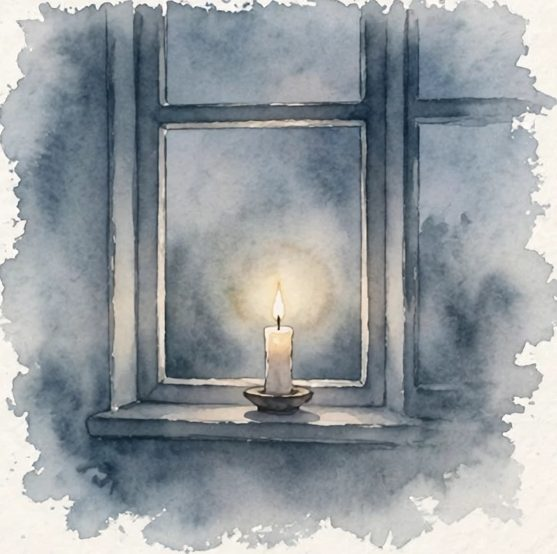
A single candle glowing in a window at dusk.
The last of the common descriptions is the one visitors lower their voices for, though nothing in it is alarming: for a minute, or the length of a street walked slowly, the feeling is too large for the chest that is carrying it. Not painfully. Not dangerously. Simply too large, the way a held breath is too large, the way a candle's light is too large for the window that frames it and has to be content with the garden, the lane, the dark beyond. The body reports a capacity problem, and then, shortly, reports that the capacity has been quietly enlarged or the feeling courteously reduced, and ordinary breathing resumes.
The house attaches no drama to these entries, which is itself a kind of teaching. Size, in a feeling, is not importance. A small feeling can reorganize a whole life; a large one can pass through a Tuesday and leave nothing changed but the light by which the evening is remembered. What the bigness conveys is only itself: for its duration, the visitor is conscious of containing more than the usual measure, the way a room is conscious, if rooms are conscious of anything, of holding music louder than its furnishings were chosen for. It passes. The furnishings are unharmed.
If the register permits itself a preference among descriptions, it is for this one, because it is the most purely honest about proportions. The feeling does not shrink to fit the explanation offered for it, and the chest does not pretend it was built for the visit. Both keep their sizes. The encounter is brief precisely because neither yields. And when the visitor breathes normally again, what remains is not a solution but a measurement, taken once and remembered for years: that the ordinary container of a life is, on the evidence, capable of being exceeded without breaking, which is not the least useful thing a person can know about the house they live in.
36Description Fails, Honestly
The hall of descriptions ends where it was always going to end: with the admission that anchors the whole house. Description fails. It fails upward, through images of open rooms and unvisited shores, of fronts crossing and words withheld, and at the end of the hall the visitor stands in front of the feeling itself, which is exactly as it was before a single image was offered. The house regards this outcome not as the hall's defeat but as its finding, and has the finding written into the register in the keeper's steadiest hand: description fails, honestly, and the honesty is the achievement.
For there are two ways for description to fail. It can fail dishonestly, by pretending to have succeeded: by fixing a label, closing the file, and billing the visitor for a mystery solved. Or it can fail the way a sketch fails a coastline: truly, effortfully, with the shape coming clearer in every attempt and the coast itself remaining, serenely, unexhausted. The house practices the second kind and teaches it to its keepers as the whole of their craft. A failed description, honestly kept, tells the next visitor more than a false one ever could: it says the territory is real, and large, and still being walked.
Visitors leave this hall, therefore, with less certainty than they brought and, the register notes with consistency, more peace. They have not been given the feeling's name, its cause, or its cure, because the house has none of those to give. They have been given company in the not-knowing, a set of sketches that fail in approximately the right places, and the discovery that a description can fail honestly and still be worth the making. The next hall takes up the naming itself, the drawer of almost-fitting words, because the house, having renounced explanation, has never renounced the attempt to speak. It has only renounced pretending that the speaking finished the job.
37Trying to Name It
Mountain ridges layered in blue haze, fading ridge by ridge into distance.
The fourth hall is the house's workshop, and its benches are covered with the tools of an honorable, hopeless trade: the naming of the feeling. Every visitor has attempted it. The attempts begin in privacy, usually mid-visit, with the mind casting about the vocabulary the way a hand casts about a table in the dark for a glass it knows is there. Sadness is lifted and set down. Joy is lifted and set down. Longing gets a longer examination than the rest, and is set down too, with respect. The hall exists because the house believes the attempt matters even though it fails, and possibly because it fails.
A name is the mind's way of shelving a thing, and shelving is a genuine good: what is shelved can be found again, carried to another room, handed to another person. The unnamed feeling refuses the shelf, and its refusal is felt as a small standing disorder in the household of the self, a book that must be left lying open on the table of every day it visits. The workshop's wisdom is that the disorder is tolerable, and even instructive. Not everything in a life is improved by being put away. Some things keep the house honest precisely by remaining out, unshelved, in the middle of the room, where they must be walked around and therefore noticed.
So the hall keeps its benches and its half-finished labels the way a boathouse keeps hulls in various stages of repair: not as evidence of failure but as the ordinary condition of a working place. Beyond the windows, if the visitor looks up from the bench, ridge fades behind ridge in blue haze, each range named on the maps and the haze itself on none of them, and the keeper lets the view make the hall's closing argument without a word. The ranges can be named. The distance between them cannot. The naming goes on anyway, patiently, in the next rooms, beginning with the errors, because the errors are where every honest naming starts.
38The Wrong Names, Tried First
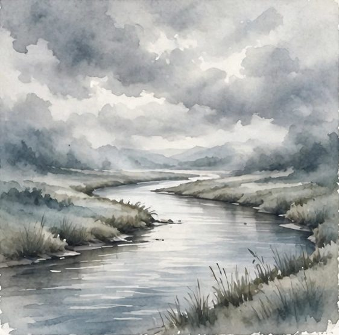
A slow river bend moving under a heavy overcast sky.
Everyone tries the wrong names first, and the register, far from mocking the sequence, has come to regard it as the correct order of operations. Nostalgia is tried, and fits the shoulders but not the waist. Loneliness is tried, in good company, and is quietly returned to the shelf by the visitor's own hand. A kind of hunger is tried, after meals. A kind of tiredness is tried, after sleep. Each wrong name does real work before it is discarded: it fences off a province of the vocabulary and lets the visitor say, with increasing precision, where the feeling is not.
The house keeps the discarded names rather than throwing them out, and its reason is the reason a river keeps its old bends in the landscape long after the water has straightened its course. An oxbow lake is not a failed river. It is the record of where the water used to run, and it holds a life of its own. The wrong names, kept in the register beside the visits they almost fit, become a map of the feeling's borders drawn from the outside: not a portrait, but a coastline, surveyed by approach and refusal, accurate in the way coastlines are accurate, which is to say truly and never finally.
There is a patience the workshop teaches here that visitors carry into the rest of the house: the willingness to let a wrong name be a stage and not a scandal. The feeling is not insulted by approximations. It waits, the way the river waits, with the whole afternoon at its disposal, while the naming goes on in good faith and incomplete success. And it should be said for the wrong names that they are how the right silence is eventually found. A visitor who has honestly tried and set down five names stands in a different quiet than one who never tried at all: a quiet with surveys in it, and water, and the feeling, still unnamed, entirely at home.
39Borrowing Other Languages' Words
Sooner or later every determined namer in this house arrives at the same shelf: the words of other languages, kept like jars of pigment for colors the home vocabulary never stocked. The instinct is sound and the house honors it. If one's own language has no word for the exact blue of the feeling, it is reasonable to ask whether another language, weathered by other coasts and other winters, ground a pigment nearer to it. Languages differ in what they have bothered to name, and the feeling, which visits all of them impartially, has been approached by many vocabularies, each with its own small net.
The borrowing is hospitality, and the house is careful about what hospitality means. A borrowed word is a chair offered to a guest, not a deed to the house. To take saudade or hiraeth into one's mouth is to be lent a shape for the feeling, carved by other people's centuries of having it, and the lending is generous and real. But the borrower who forgets the word is borrowed — who begins to say the feeling's name has been found at last, in a prettier language — has mistaken the chair for the guest, and the register, gently, corrects the entry.
Kept in their proper place, the borrowed words are among the workshop's treasures, because they prove the most consoling fact in the building: that the feeling has been felt so widely, and for so long, that whole peoples have worn a groove in their language at exactly the place where it passes. The jars stay unmarked on the shelf, their greys differing by a shade, and the keeper takes them down one at a time for visitors who need to see that the unnamed thing has a long and distinguished history of being almost named, in every tongue that has ever tried.
40Saudade, Hiraeth, and Their Cousins
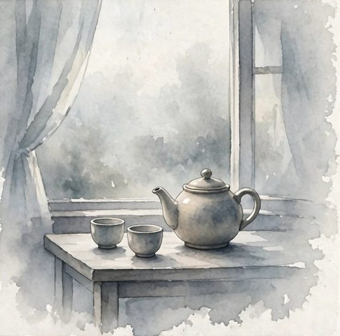
A teapot and two cups set on a small table beside a window.
The shelf's most borrowed jars deserve a room of their own, and this is it. Saudade arrives from the Portuguese with its arms full: a longing for something absent, perhaps something that never existed, perhaps something that has not happened yet, carried not as a wound but as a presence. Hiraeth comes down from the Welsh hills with a homesickness for a home that may never have been, or that cannot be returned to, or that exists only in the returning. The keeper pours tea for these words as for honored guests, because that is what they are: evidence, from far away and long ago, that the feeling keeps a large family.
Their cousins fill out the room. From Japan, mono no aware, the gentle ache at the passing of things, an awareness that the blossom is beautiful partly in its falling. From German, a word for a longing directed at distant places simply because they are distant. From Russian, a word that means longing and boredom and spiritual ache in a single breath, defying every translator it has ever met. The register lists them without ranking. Each is a net mended by a different coast, and the sea they fish is the same sea, and none of them has ever brought up the whole of it.
What the family finally offers a visitor is not a name but a census. The feeling that arrives unnamed at one person's window has been received, under near-names and borrowed names and no names, in Lisbon and in the Welsh valleys and in Kyoto and in winter kitchens with the tea going cold, for as long as there have been people to sit with it. That is the hall's closing entry and its whole comfort: the visitor is not the first host, and will not be the last, and the unnamed guest, traveling under all these almost-names, has been good company to the species for a very long time.
41A Word Would Make It Smaller
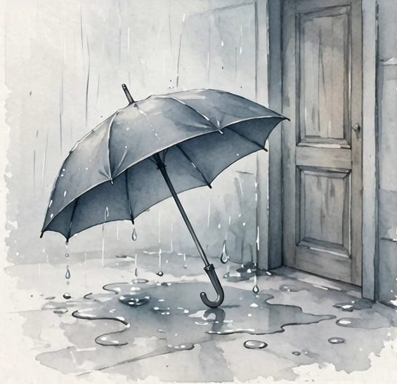
An umbrella stands open to dry beside a door, droplets gathered on the floor.
There is a moment, familiar to anyone who has tried, when the word is nearly found — it rises like a handle toward the hand — and something in the visitor quietly hopes the hand will miss. Not from perversity. The feeling, held at its current size, has a kind of weather-room spaciousness to it; it fills the chest the way mist fills a valley, by being everywhere at low density. A word would change the arrangement entirely. A word has edges. A word can be carried away in a pocket, and the house has noticed that what can be carried away can also be put down in the wrong room, among the wrong furniture, and mistaken ever after for something else.
The keeper's register is full of these loyal evasions. A visitor will say: it is like homesickness, except — and then stop, unwilling to finish the theft. Another will begin three sentences in one afternoon and abandon each at the same place, the place where the comparison would harden into a label. The house does not treat these unfinished sentences as failures of speech. They are acts of measurement, honestly reported. The thing being measured is larger than the instruments brought to it, and the visitor who says so is not being poetic. He is being accurate, in the only way the material allows.
So the word is let go, most days, without regret. The feeling keeps its size, which is to say it keeps its weather, and the visitor keeps his honesty, which is worth more than a tidy shelf in the register. If a word comes later — next year, in another country, in the middle of an unrelated sentence — the house will be glad to record it. But it will record it as a visitor's report, not as the feeling's true name. The umbrella by the door is not the rain. It is only the rain's most recent address, already drying.
42Naming as a Net With Wide Mesh
The house keeps, for teaching purposes, a net with a very wide mesh, and the keeper shows it to visitors who arrive determined to catch the feeling in a single cast. Language, he explains, is a net of this kind: honorable, useful, and built for ordinary fish. It brings up most of what a life needs to say — grief, relief, boredom, gratitude, the weather of whole decades. But some things that move through a life are not the net's quarry at all. They pass through the mesh unchanged, and the honest fisherman does not conclude that the water was empty. He concludes that the water holds more than his net was made for.
This is not an argument against naming. The register is full of names, and the house is grateful for every one of them; a named feeling can be visited, revisited, and spoken of across a table. The argument is only about the mesh. A name thrown over this particular visitor catches the outline and loses the animal. What stays in the net is a shape — it was something like longing, it was something like peace — while the feeling itself goes on downstream, unbothered, having been described the way a river is described by the splash it makes on a boot.
The keeper's advice, entered in the margin of the register, is to fish gently and to keep the logbook honest. Write down what the net brought up; write down also, in the same hand, that the largest thing escaped. Visitors who learn this stop apologizing for their empty nets. They come to the water with a different expectation — not capture, but attendance. The net is still carried. It still earns its keep on ordinary days. It is simply no longer blamed for the one fish it was never built to hold.
43The Metaphors Arrive to Help
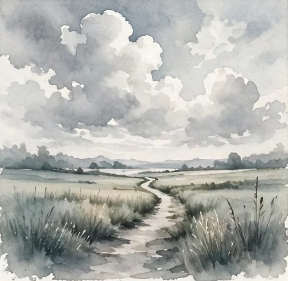
A narrow field path runs forward under large moving clouds.
When the literal words give up, the metaphors arrive — uninvited, punctual, and dressed for work. The feeling is like a room in a house one used to live in. It is like hearing one's name called in a crowd and turning to find no one. It is like the hour before a journey, when the bags are packed and the house has already begun to belong to the past. The house receives these helpers courteously. Metaphor is the oldest tool in the register, older than any name, and it has carried more of this feeling across to other people than every dictionary in the building combined.
The keeper notes, though, that metaphors help the way a path helps across a field. A path does not describe the field; it makes the field crossable. When a visitor says the feeling is like standing on a platform as a train leaves, he has not defined anything. He has built a small crossing by which another person — who has also stood on such a platform — may walk over and stand beside him in approximately the same weather. Approximation is not a small thing. In this house it is nearly everything. Two people standing in approximately the same weather have understood each other as fully as this material permits.
So the metaphors are kept, all of them, even the ones that contradict. The register lists the feeling as like a tide and like a held breath, like a letter and like a light left on, and refuses to choose. Contradiction is the signature of honest approximation. The path under the moving clouds is worn by many feet going in both directions, and the house maintains it with more care than any of its definitions. Definitions are kept in drawers. Paths are kept open.
44It Is Like — and Then It Isn't
A tiny island wrapped in mist sits in the middle of a still lake.
Every visitor knows the sentence. It begins with confidence — it is like the moment before rain — carries two or three words further, and then quietly collapses: and then it isn't. The house has a whole shelf of these collapsed sentences, and the keeper regards the shelf with more respect than any other in the building. The collapse is not the failure of the sentence. The collapse is the most accurate part of it. The feeling agreed, briefly, to resemble something; then it withdrew its agreement, the way mist withdraws a shoreline, and the honest speaker reported the withdrawal instead of pretending the resemblance held.
There is a discipline here that the house teaches gently. Say the likeness fully — do not hoard it, do not protect the feeling from comparison as if comparison were an insult. Then, when the likeness gives way, let it give way in the same sentence, out loud, without embarrassment. The visitor who can say it is like this, and then it isn't, has described the feeling twice: once by its nearest neighbor and once by its refusal to live there. The second description is the rarer gift. Most accounts of inner weather stop at the neighbor's fence and call the visit complete.
The island in the lake is the register's emblem for this block. From the shore it is clearly an island: edges, trees, a shape a child could draw. Paddle closer and the mist takes the edges back; it becomes a suggestion, a darker patch of weather, present and unverifiable at once. Both reports are true, and the distance between them is exactly the distance the sentence travels. It is like an island — and then, from the boat, it isn't. The house keeps the oar and the uncertainty in the same boathouse.
45Letting It Stay Unnamed
At some point in most visits, a quiet decision becomes available: to stop trying. Not in defeat — the house is careful about the distinction — but in the way one stops trying to keep a picnic dry in settled rain and simply walks home through it, unhurried, getting wet. The effort to name the feeling was never wasted. It mapped the borders. It tried the neighbors, borrowed the foreign words, walked the metaphors to their ends. What remains, after honest effort, is the thing itself, and the decision to let it stay unnamed is the decision to keep company with the thing itself rather than with its outline.
The keeper keeps an unmarked box on the register shelf for this decision. Nothing is in it. That is the point the visitors laugh about, and then, usually, fall quiet about. Some truths of the house are kept by being kept empty. The feeling that stays unnamed is not filed away and forgotten; it is left out on the table of the day, unboxed, where it can be seen each time one passes. Paradoxically, the unnamed feelings are the ones most often noticed. A labeled jar is closed. An open bowl is looked into every time the light changes.
Letting it stay unnamed is also a form of trust — in the feeling, that it is what it is without paperwork; and in oneself, that one can host a guest whose name one cannot pronounce. The house asks nothing further of either party. The visit proceeds. Tea is made. The register records the date, the hour, the light, and in the space reserved for the name, the keeper writes nothing at all, and the nothing is entered with the same care as any word in the book.
The Feeling Desk
One desk receives all correspondence for this house — questions, corrections, and word of any feeling a visitor cannot explain: where it came from, what it resembled, how long it stayed. It is read in the order it arrives, and nothing sent to it is diagnosed, interpreted, or explained back.
46A Private Name, Kept Private
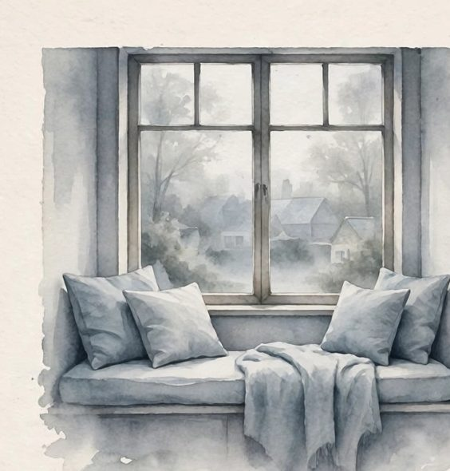
A window seat with cushions and a folded blanket rests in grey light.
Some visitors, the house has learned, do name it in the end — but privately, the way one names a path through a wood that no one else walks. The private name is not accurate, and its owner does not pretend otherwise. It might be a color. It might be the name of a street in a city lived in briefly at nineteen, or a word assembled from the feeling's own weather: the blue hour, the inland tide, the second autumn. Accuracy was never the purpose. The purpose is address. A private name lets its owner greet the feeling on arrival — there you are — instead of meeting a stranger at the door every time.
The house protects these names with unusual strictness. They are not written in the register. They are not asked for at the Feeling Desk, and the keeper, who has heard a few across the years in the way one hears things through a wall, keeps them the way the wall does. A private name is a room with one chair. Its privacy is not secrecy born of shame; it is simply the correct size of the furniture. Some things are built for one occupant, and the feeling, which arrives for one person at a time, is honorably housed in a name of the same proportions.
Visitors sometimes worry that a private name is a kind of cheating — a solution smuggled past the house's honesty. The keeper disagrees, and says so in the plainest entry in the book. A name you have made yourself, knowing it is made, knowing it is approximate, knowing it will never be tested across a table — that name deceives no one, least of all its maker. It is a handle on a door, not a claim about the room. The window seat is kept with its blanket folded. The name is kept the same way: ready, personal, and nobody's business.
47The Name It Answers To, Some Days
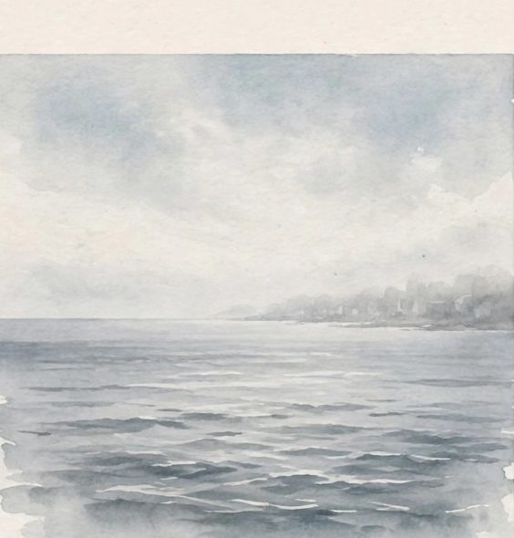
A calm grey sea lies under a wide pale sky.
Stranger still, and reported often enough that the register has a column for it: the feeling answers to different names on different days. On Tuesday it is nearly longing. By Friday it has nothing to do with longing and is nearly peace. A fortnight later it stands closer to gratitude than to either, though nothing has happened to explain the migration. The novice visitor suspects himself of inconsistency, and the house hastens to reassure him. The visitor has not changed his story. The weather has changed its quarter. A feeling this size is not a statue to be identified once; it is a sea to be read each morning, and the reading is dated, not contradicted, by yesterday's.
The keeper's practice here is borrowed from sailors. One does not demand that the water keep yesterday's name. One logs the conditions: light, wind, the look of the surface, and underneath the log a humility about causes. The name that fits today is used today, lightly, the way one uses a forecast — as the best available kindness to oneself, not as a verdict. Tomorrow the feeling may answer to it again, or may not rise to any name at all, and both outcomes are entered without surprise in the book.
This is why the register's columns are headed with dates rather than definitions. The house is not building a taxonomy; it is keeping a log. A taxonomy wants the feeling to hold still, and it will not, any more than the grey sea under the pale sky holds still for the chart-maker. What can be kept is the record of attendances: it answered to this on that day, in that light. The visitor who keeps such a record owns something better than a name. He owns a history of acquaintance, which is what a name was only ever trying to abbreviate.
48Unnamed Is Not Unwelcome
The hall of naming closes with the plainest entry in its section of the register: unnamed is not unwelcome. The house repeats it because visitors arrive, more often than one would expect, with an apology ready — sorry, I cannot even tell you what it is. The keeper waves the apology away with genuine impatience, the only impatience he is known to show. A guest is not required to present papers at the door of his own chest. The feeling that arrives without a name arrives the way weather arrives at a coastline, and no coastline has ever yet demanded that the rain introduce itself before falling.
There is a hospitality in this house that runs deeper than its methods. Methods are for the named feelings — the griefs that can be scheduled, the joys that can be announced. Underneath the methods runs an older rule, laid down when the house was built: whatever arrives honestly is received honestly. The unnamed feeling qualifies. It does not knock with a reason; it does not bring a reference from a known emotion; it stands in the hall with its coat dripping, and it is given the chair anyway. More than given — it is expected. The register's oldest pages suggest the house was built for this guest first, and for all the named ones second.
So the visitor is sent from this hall with one sentence to carry into the next: you do not owe the feeling a name before you may sit with it. Naming, when it comes, is a courtesy the guest may accept or decline. Welcome comes first and is unconditional. The lamp by the door is not lit for the guests whose names are known. It is lit for the ones still finding the path, unnamed, unannounced, and already — by the house's first and oldest rule — expected.
49Sitting With It
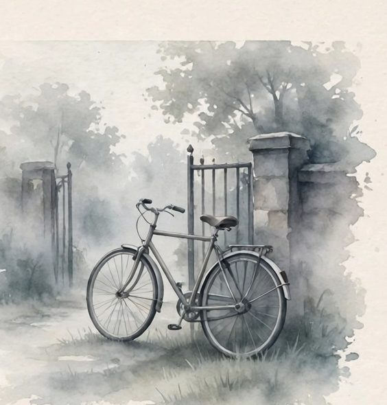
A bicycle leans against a gate in soft fog.
The fifth hall of the house is furnished simply, and deliberately so: chairs, a window, a kettle, and no instruments of any kind. This is the hall of sitting with it, and its doctrine can be stated in one line — the feeling is to be kept company, not conducted. The visitor who has traveled through four halls of origins, descriptions, and attempted names now arrives at the house's central practice, which turns out to be almost embarrassingly modest. Sit down. Stay a while. Let the feeling be in the room the way weather is outside a window: present, unowned, and in no need of your management.
The keeper is the first to admit that sitting with it sounds like nothing, and that this is precisely its difficulty. The named troubles of a life come with tasks attached — grief has its letters to write, fear its locks to check. This guest brings no task. It asks the visitor to practice a skill that modern hours are designed to prevent: remaining in the presence of something unresolved without reaching for a tool. The house does not grade the practice. Ten honest minutes in the chair outweigh an afternoon of fidgeting through an entire hall of explanations, and the register says so in ink.
The bicycle at the gate is this hall's picture. Its owner has not locked it, because he is not staying long, and has not taken it inside, because he is staying long enough. Sitting with the feeling is exactly this kind of visit: unarmored, unscheduled, at the threshold between weather and shelter. The fog does the rest. Whoever learns to lean his errands against the gate and sit down in the grey light without a purpose has learned the whole of the fifth hall, and the keeper will want nothing further from him that day.
50Tea, and No Interrogation
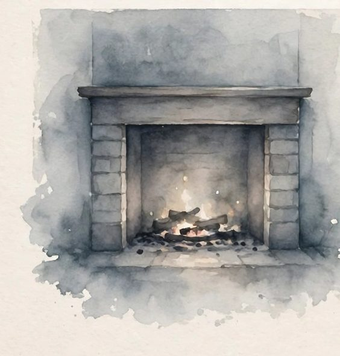
A fireplace with low glowing embers warms a quiet room.
The house's method, if the word is not too grand for it, is tea. When the feeling arrives, the keeper puts the kettle on — actually, literally, in the room where the guest will sit — and the small ceremony does the work that questions cannot. There is the filling, the waiting, the pouring; there are two cups where one would do. The feeling is not asked what it is, where it has been, what it wants, or how long it intends to stay. It is offered tea. The register records that more true things have been learned about this guest over an unasked cup than in all the house's years of courteous inquiry combined.
Interrogation, even of the gentlest kind, changes the weather it studies. Ask the feeling why it has come and it will either invent an answer or withdraw to a distance from which nothing can be learned. The house learned this early and wrote it on the kitchen wall, so to speak: a guest questioned about his errand becomes a defendant; a guest given tea becomes, in time, a talker — or not, and both outcomes are acceptable. The kettle asks nothing. That is its qualification. Beside the kettle, the keeper practices the same restraint, and the room slowly acquires the feeling's own pace instead of the household's.
The embers in the grate are the register's picture of the correct temperature for all this. Not a blaze — a blaze is an event, with its own demands. Not ashes either. Low, steady, undemanding warmth that asks nothing of the room except that it stay. Tea cools; embers settle; the feeling occupies its chair at its own depth. Whatever the visit is for, it is not for answering. The house keeps the cups washed and the questions unasked, and finds, decade after decade, that this is nearly the whole of its wisdom.
51It Sits Down Like a Guest
One of the house's most reliable observations is that the feeling, if not chased, sits down. It arrives standing — in the doorway of the attention, hat in hand, so to speak — and it watches the room to see what kind of reception is being prepared. If the room prepares an examination, the feeling remains standing, and the visit is all threshold. If the room prepares a chair, the feeling, after its own pause, sits. The register has timed it, in its unscientific way, across many years: the sitting down happens sooner in houses that keep a chair ready and later, or never, in houses that keep a questionnaire.
What changes when it sits is not the feeling but the visit. A standing guest is braced; the conversation, such as it is, stays at the level of arrival and explanation. A seated guest settles into the room's time. The feeling, seated, becomes something one is with rather than something one is facing, and this small grammatical difference — with rather than facing — is the difference the whole fifth hall exists to teach. One does not solve a guest. One does not face down a guest. One sits with a guest in the same light, and the light does the rest.
The keeper keeps the chair by the window permanently drawn up, even on days when no feeling is expected, the way some households keep a bed made for a traveler who may never come. It costs little. It changes the room's whole posture toward its own weather. And on the evenings when the guest does arrive and, after its pause, sits down into the kept chair, the house achieves the modest summit of its art: two presences, one room, no agenda, and the quiet holding for as long as it holds.
52Not Entertaining It, Not Evicting It
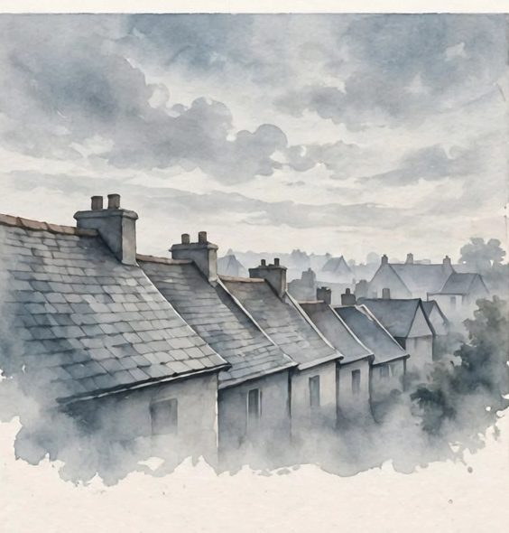
A row of rooftops stands under slow evening clouds.
Between welcome and dismissal there is a narrow, correct posture, and the fifth hall is largely devoted to finding it. The feeling is not to be entertained. Entertainment is work: it means performing cheerfulness, producing conversation, keeping the guest amused lest it grow restless — and a feeling entertained in this way learns to expect a show, and stays for the show, and the household exhausts itself providing one. Nor is the feeling to be evicted. Eviction is also work, and louder work; the register's saddest pages describe visitors who spent whole evenings pushing at their own weather, and succeeded only in giving it their entire attention in the form least restful to both parties.
The posture the house teaches is nearer to tenancy. The feeling is in the room the way the evening is on the rooftops: it lies across everything at the same weight, it belongs to no one, and it will lift when it lifts. The household goes on with its evening inside it — letters, supper, the ordinary furniture of hours — neither staging itself for the weather nor pretending the weather is not there. This is harder than it sounds, and the keeper says so kindly. Going on with one's evening inside an unexplained feeling is a form of strength the house respects more than either performance or resistance.
The rooftops in the plate have carried every kind of evening without applying for a different one. Rain has stood on them, snow has stood on them, and the unnamed feeling has stood on them in its turn, and they remain rooftops — pitched, patient, and dry underneath. The visitor is invited to take the hint. He is not the sky's host and not its opponent. He is the house under it, with rooms to keep warm, and that keeping is occupation enough for one evening of weather.
53The Chair by the Window
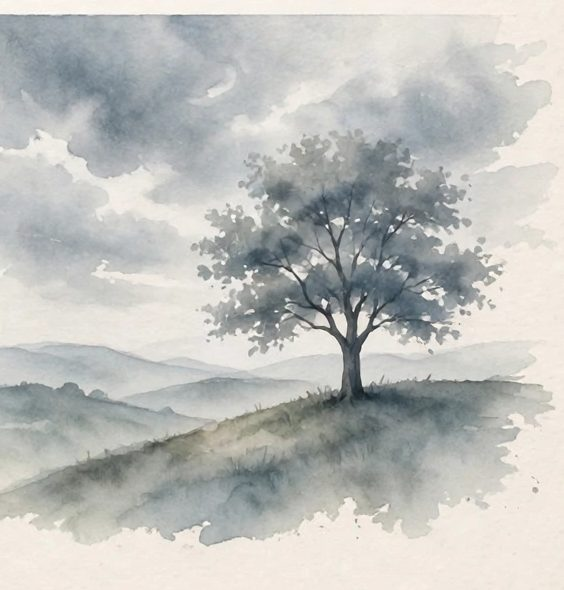
A single tree stands on a hilltop under passing weather.
Every room the feeling is sat with in, the keeper will tell you, eventually elects one chair as its own, and it is nearly always the chair by the window. The reasons are practical before they are poetic. The feeling is weather, and weather is best kept company beside more weather; the eye, given a horizon, stops searching the room for exits. Visitors who sit with the feeling in interior chairs — facing walls, facing desks, facing the furniture of their obligations — report a shorter patience. Visitors at the window report that the visit timed itself. The house does not argue with the evidence. It has moved the good chair.
From the chair by the window, the sitting takes its shape. The feeling is inside; the weather is outside; and the pane between them turns out to be the exact thickness of the whole doctrine. Close enough to watch, separate enough not to drown. The keeper has seen visitors weep at this window and seen others fall peacefully asleep in the chair, and he records both outcomes with the same even hand. The window does not ask which. It offers the grey light, the passing fields of cloud, and the long permission to look at something that is also looking at nothing in particular.
The tree on the hilltop keeps the chair's hours in its own way — rooted, exposed, and entirely without a schedule of improvements. It does not leave the hill when the weather turns unnamed; it does not need the weather to introduce itself either. The house offers the comparison without insisting on it. Sit where the seeing is widest. Let the feeling have the window side of the room. Stay until the light changes, which it will, and notice — this is the chair's final lesson — that the light was changing the whole time, for both of you.
54It Watches the Rain With You
On many visits — more than half, the register estimates — the sitting produces no conversation at all, and the house has stopped regarding this as the visit failing. The feeling takes the other chair, so to speak, and watches the rain with the visitor, and the two of them attend to the same water on the same glass with something that is not quite companionship and is certainly not loneliness. It is the shared weather of creatures who have stopped requiring anything of each other. The keeper, passing the door, does not interrupt these sittings to ask how they are going. He knows how they are going. They are going like rain.
There is a particular quality to this shared watching that the named feelings rarely achieve. Joy wants to be shared actively, grief wants to be witnessed; both make their claims. This feeling makes none. It watches the rain with you, and in doing so it grants the visitor the rarest of the house's gifts: an hour in which nothing about his inner life is being transacted. No progress is made. No insight is filed. The rain streaks the glass, the feeling occupies its chair, and the visitor is, for once, neither the host of his emotions nor their patient, but simply a third presence in a quiet room.
The register keeps a small notation for such evenings, a mark in the margin shaped, the keeper insists, like nothing at all. Visitors who have had one tend to ask for another, and then catch themselves — the asking is already the wrong instrument. These sittings cannot be ordered up; they occur when interrogation fully stops, which cannot be scheduled either. What can be done is only what the house does: keep the chairs by the window, keep the kettle near, and let the rain, when it comes, find the room already arranged for watching it together.
55Conversation at a Lower Volume
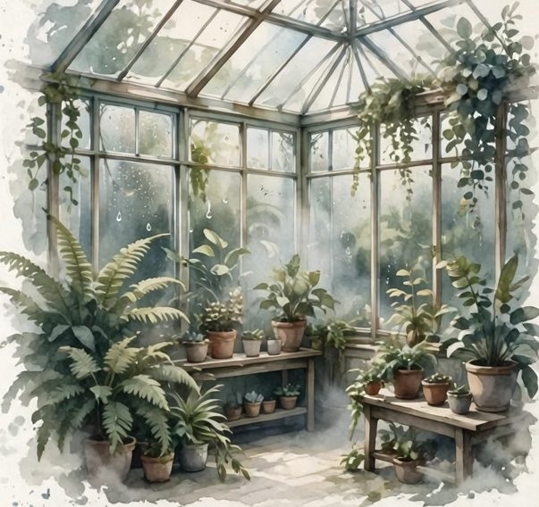
A glass conservatory full of green plants rests in humid soft light.
When the sitting does produce words — and sometimes, late in a visit, it does — they arrive at a lower volume than the rest of the visitor's life is conducted at. The house has noticed this so consistently that the keeper now mentions it to novices in advance: whatever you find yourself saying to the feeling, or near it, you will say more quietly than you planned. Not from sadness. From calibration. The feeling is a low-volume presence, and speech, like a guest entering a sleeping house, adjusts itself without being asked. Sentences shorten. The space between them lengthens. Nobody in the room regards this as a loss.
What is said at this volume is rarely the material of the earlier halls. Not origins, not names, not explanations — those were loud topics, and they are finished for the day. At the lower volume the visitor says simpler things. I don't know what this is. It comes on Tuesdays, sometimes. It isn't bad. He may say them to the keeper, or to no one, or to the feeling itself, and the house does not distinguish among these addresses, because at this volume they amount to the same utterance: a true sentence, spoken without an agenda, in the presence of the thing it describes.
The conservatory is the register's picture of the acoustics. Glass, green growth, air kept warm and humid — sound in such a room does not travel; it settles, the way moisture settles on the leaves. The keeper tends this room as he tends the whole fifth hall: not to produce anything, but to keep the conditions in which a quiet thing can occur unhurried. Conversation at a lower volume cannot be forced, only permitted. The house permits it, and then stands back, and lets the plants have most of the silence.
56It Does Not Need Cheering Up
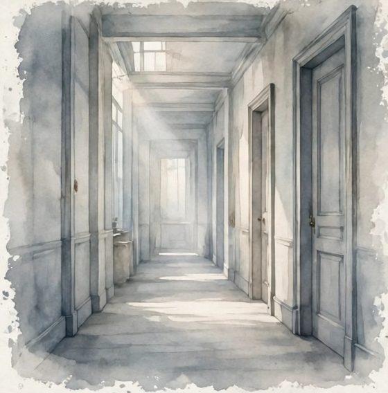
A long quiet corridor of closed doors holds a single shaft of pale light.
The most common error of the well-meaning host, the register says plainly, is the attempt to cheer the feeling up. It arrives grey, and the household reaches for brightness — music, company, plans, the brisk medicine of distraction — as one reaches for a lamp in a room someone is sleeping in. The intention is kind and the effect is a small violence. The feeling did not come in asking to be brightened. It is not a mood that has failed to reach cheerfulness; it is a different weather altogether, and weather resents being argued with about its temperature. Visitors who insist on cheering it usually succeed only in making the room unusable for both parties.
The keeper's alternative sounds like neglect and is actually respect. Let the feeling be exactly as grey as it is. Grey, in this house, is not a deficiency of color; it is the palette of the hour, with its own gradations, which the eye learns — sitting, not fixing — to distinguish and even to value. The feeling, uncheered, often deepens rather than worsens: it settles from a flat grey into a layered one, and layered weather, like layered light, is where the register's most beautiful entries come from. None of them were produced by brightness applied from outside.
The corridor in the plate is the house's quiet argument. Closed doors, a shaft of pale light, no one performing welcome in it — and yet it is not a desolate picture. It is a passage kept clean for something moving slowly through. The feeling, left uncheered, moves through the visitor's corridors in much this way: unaccompanied by fanfare, illuminated at intervals, and headed — though no one says so aloud in this hall — toward the door by which it came. Cheering would only detain it at the threshold, arguing. The house lets it walk.
57A Guest Who Brings No News
Visitors arriving from the outer world — where every arrival is expected to signify something — often wait, through a whole first sitting, for the feeling to deliver its news. It must have come for a reason. It must be carrying word of a decision ripening, a grief approaching, a change gathering somewhere offstage. The register is gentle with this expectation and entirely firm about the facts. This guest brings no news. It is not a herald. Nothing follows it, reliably, except its own departure and, sometimes, a slightly altered quality in the following day's light, which the next hall will consider on its own merits.
The house is aware that this frustrates a certain kind of visitor — the kind who experiences unexplained things as promissory notes. To him the keeper offers the doctrine in its baldest form: most visits mean nothing beyond themselves. The feeling is not the visible tip of an invisible event. It is itself the entire event, whole and self-sufficient, like a fall of snow in a month when no one needed snow for anything. Trying to spend it as currency — on insight, on warning, on meaning — is the one transaction the Feeling Desk declines to process. The guest's pockets are empty, and its hands, the register notes, are clean.
Accepting a guest with no news turns out, for many visitors, to be the visit's quiet turning point. Once the expectation of news is set down — it is a heavy thing, and setting it down is audible in the room — the sitting becomes what it was always meant to be: unproductive, unhurried company. The mailbox at the end of the path is empty most days, and the path is walked anyway, for the walk. The house recommends the arrangement. Not every open hand is waiting to be filled. Some are just open.
58Staying Until It Stands to Go
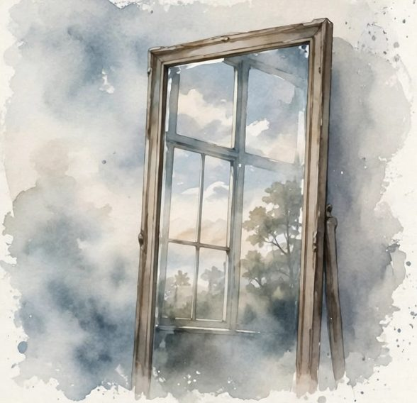
A tall mirror reflects only a window and the sky.
The sitting has one rule of departure, and it is not the visitor's to enforce: you stay until it stands to go. The feeling does not keep the household's hours. It may sit for twenty minutes; it may take the whole grey afternoon; the register has recorded visits of both lengths between the same walls, with the same kettle, under the same light, and no method has ever been found to predict which visit is beginning. The visitor's task is not to shorten the stay. It is to remain seated — in body where possible, in attention absolutely — until the guest itself rises, which it does, in the end, with the unmistakable quiet of a person who has decided the visit is complete.
Rising early is the one discourtesy the house actively discourages. A visitor who stands first — who declares the sitting over, the feeling dealt with, the afternoon reclaimed — usually finds the feeling not gone but displaced: it follows him to the next room, and the next, standing in each doorway as he enters, so that the whole house becomes thresholds. Stayed with, by contrast, it leaves cleanly, all at once, the way mist leaves a field — not gradually but categorically, so that the visitor looks up from his tea and finds the room simply his again, and slightly surprised at how long that took and how little it required.
The mirror in the plate reflects the doctrine back at the visitor, politely. It shows the window and the sky and nothing else — no face to inspect, no expression to correct. Staying is done at that level of simplicity. You do not watch yourself staying; you watch the weather, and weather rewards the unselfconscious. When the feeling stands to go, the mirror will still be showing only sky. That is the register's final word on this block: the room was never about you, and your staying kindly in it was the whole of the gift.
59The Room Is Calmer for Its Visit
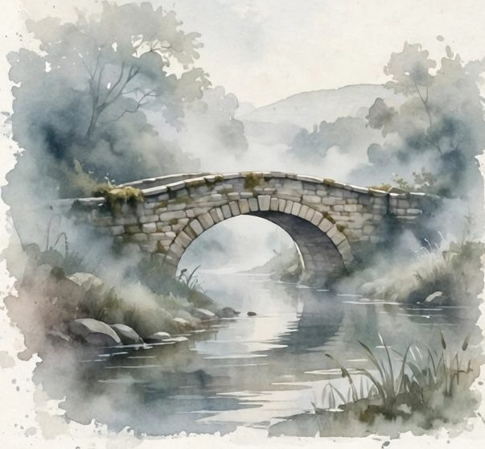
A stone bridge crosses a slow river wrapped in mist.
It is one of the house's standing paradoxes, attested too often to argue with: the room is calmer for the visit. The feeling arrives unnamed, unexplained, and entirely without credentials, and yet a household that has sat with it — without interrogation, without cheering, without eviction — reports, in the hour after its departure, a quality of quiet that the ordinary untroubled afternoon does not produce. The keeper has given up explaining this and merely records it. Calm, it seems, is not the absence of the unexplained. It is what the unexplained leaves behind when it has been received properly: a room whose furniture has been sat in, by weather and witness together.
The explanation, insofar as the house permits itself one, is modest. A visit survived without fuss teaches the household something about its own capacity. The feeling came; nothing had to be done; nothing broke; the tea went cold and was reheated; the world did not end for want of an explanation. Each such visit lowers the household's estimate of how dangerous its own inner weather is, and a household less afraid of its weather is a calmer household, in the way a valley town that has watched a hundred harmless floods stops sandbagging against the rain. The calm is earned. It is the interest paid on all that sitting.
The bridge in the plate earns its calm the same way — by being crossed in both directions without incident, in mist, repeatedly, until the mist is part of the bridge's ordinary beauty rather than its hazard. The register closes this block with the observation that visitors begin, after a few such visits, to look almost disappointed on the entirely clear days. The house understands. A room that has hosted the feeling and kept its calm has learned its own dimensions, and there is no going back to finding them frightening.
60Company, Kept Lightly
The fifth hall closes by giving its practice its proper weight, which is light. Company, kept lightly: that is the whole method, and the house resists every attempt — including its own, on its grander days — to make more of it. No vows are taken in this hall. No schedule of sittings is imposed. The visitor is not enrolled in anything. He has learned to receive an unexplained feeling the way one receives weather at a window: with a chair, a cup, an hour of unbothered attention, and a complete willingness to let the matter rest there. If he forgets the method for a year, the feeling will remind him. It always comes back to houses that know how to be quiet.
Kept lightly also describes how the company itself should feel from the inside. A heavy sitting — gritted, dutiful, clock-watched — is merely interrogation wearing a costume. The real thing has an ease in it that surprises novices: jokes are permitted in the fifth hall; letters may be written during a visit; the feeling does not require the household's solemnity, only its presence. Lightness is not frivolity. It is accuracy about what is being asked, which is little: not reverence, not labor, just attendance without weight. The keeper's own sittings, observed over decades, look from the doorway like a man doing almost nothing, extremely well.
Two chairs, angled toward each other, and a low table between: the register keeps returning to this furniture as if it were an argument, and in a way it is. Everything the house believes is in the arrangement — that the feeling is a presence and not a puzzle, that presence is met by presence, that what passes between them needs no name to be real. The hall darkens behind the visitor as he leaves it. Ahead lie the halls of what the feeling is not, and what it leaves behind. He goes into them, if the house has done its work, carrying the chairs with him.
The Feeling Desk
One desk receives all correspondence for this house — questions, corrections, and word of any feeling a visitor cannot explain: where it came from, what it resembled, how long it stayed. It is read in the order it arrives, and nothing sent to it is diagnosed, interpreted, or explained back.
61What It Is Not
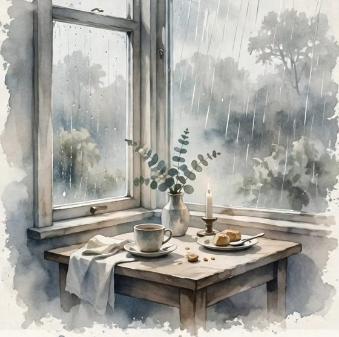
A table set for one stands beside a rainy window.
The sixth hall is the house's quietest piece of architecture: a long room of gentle negations, in which the feeling is relieved, one by one, of the identities that other people — and the visitor himself, in his louder moments — keep trying to issue it. The keeper calls it the hall of unburdening. Nothing is asserted here. Instead, the register's most patient entries are read aloud in effect: it is not this, it is not that, it need not carry any of these. Visitors often weep a little in this hall, not from sorrow, but from the specific relief of watching a guest they have hosted for years be excused, formally, from duties it never agreed to.
The negations are not arguments and the house does not make them triumphantly. Each one is a setting-down rather than a refutation — a parcel taken from the feeling's arms and placed, without ceremony, on the hall's long table. By the end of the hall the table is crowded with them: symptom, message, warning, debt, evidence, emergency, performance. The feeling, meanwhile, is lighter by exactly that much, and looks — the register insists on the observation — not diminished but relieved, like a traveler who has been allowed to put down bags that were never his.
The table set for one beside the rainy window is this hall's true portrait. Not a feast refused or a loneliness staged — just the plain arithmetic of a single place setting, and weather outside, and the sufficiency of both. What the feeling is not begins here: it is not company required, not a problem laid for two, not an occasion. It is one person's weather at one person's table. The long hall that follows simply unfolds that single plate setting into a dozen gentle sentences, each beginning, in its way, with the same merciful word: not.
62Not a Symptom to Be Chased
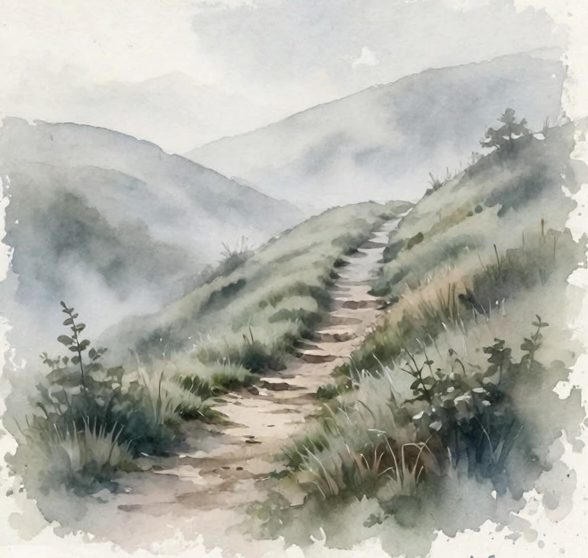
A hill path climbs upward and disappears into fog.
The first parcel set down in this hall is the heaviest one most visitors carry in: the notion that the feeling is a symptom — a surface stirring that points down, to some buried condition that ought to be dug up and dealt with. The house retires this notion gently and without engaging its machinery. In the register's long experience, the unexplained feeling behaves like weather and unlike evidence. It does not deepen when pursued; it does not resolve when cornered; it does not keep an appointment with its supposed cause. Visitors who have spent years chasing it downward report, almost to a one, that the chase produced only the chase. The feeling was at the surface the whole time, being weather, waiting to be sat with instead of excavated.
The house is careful here, because it is not a house of medicine and does not pretend to be one, and nothing in this hall should be mistaken for counsel about anyone's health. Its claim is smaller and purely its own: within these walls, this guest is received as weather. If a visitor's weather ever frightens him in ways this house was not built for, the keeper will walk him kindly to the door and point him toward houses with other purposes, and think no worse of either of them. But the feeling described in this register — the passing, nameless grey — has earned its classification ten thousand visits over. It is not the visible part of a hidden malfunction. It is the visible part of being a person, outdoors in one's own climate.
The hill path climbs and disappears into fog, and the register adopts it as this block's emblem without apology. A path entering fog is not a path concealing its destination through malice; the fog is simply the condition of the hill that hour. So with the feeling. It does not trail off into mystery because something is hidden in it. It trails off because that is where, for now, the seeing ends. The house sets down the shovel at this point in the hall, and picks up the kettle, and considers the exchange the best bargain in its entire doctrine.
63Not a Message in Code
The second parcel is the cipher. It arrives in the visitor's luggage with a certain glamour: the feeling as an encoded dispatch, sent by something — the depths, the past, the allegedly wiser parts of the self — and requiring only the right key, the right book, the right patient hour, to be read. The house receives this theory with courtesy and lays it on the table with the others. In the register's experience, the feeling does not decrypt. Visitors have applied every key in the building to it across the years, and what the applications produced was keys, in great variety, and not readings. The lock, examined honestly, was never a lock. It was weather wearing the shape that makes pattern-hungry minds see a door.
The house is not mocking the hunger. Pattern is the mind's oldest tool, and a creature that could not find messages in rustlings would not have survived to build houses like this one. But a tool can be laid down when it is not cutting, and the keeper teaches the laying down as one teaches any courtesy: plainly, and early. The feeling is not a text. It has no authorial intention hiding in its clauses. It is not improved by being read, because reading was never its medium. It is sat with, the way rain on a window is sat with, and rain — the register notes — has never yet been improved by exegesis.
The sealed envelope in the plate is blank on its face, and the block's doctrine is that the blankness is the whole of it. The visitor may keep the envelope; many do, and the house keeps a drawer for them. He may even keep it forever, unopened, as a reminder of the one message he agreed not to invent. That agreement is the maturity this hall exists to produce: to let a sealed thing be sealed, a quiet thing be quiet, and a feeling be exactly the size of itself, which is the size of an afternoon's weather and no larger.
64Not a Warning, Necessarily
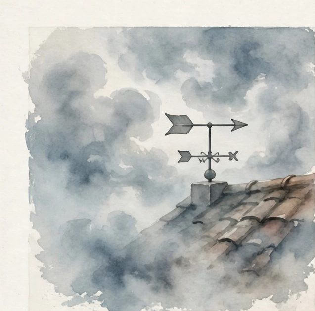
A simple iron weather vane turns on a rooftop against moving clouds.
The third parcel is the warning — the belief, rarely spoken aloud but widely held in the chest at three in the morning, that the feeling has come ahead of something: that it is the first tremor of a sorrow, the scout of a change, the body's early bulletin of bad news gathering somewhere beyond the hill. The house sets this down with particular gentleness, because fear is a tenderer thing than theory. It sets it down, all the same. The register has kept the numbers, in its unscientific way, across decades of visits: the feeling has arrived before sorrows no more often than before ordinary Tuesdays. Its forecasting record is that of weather everywhere — it is followed, eventually, by everything, and is therefore prophetic of nothing.
The word the keeper restores to this block, in the register's margin, is the title's own: necessarily. The feeling is not a warning, necessarily. It might, by pure sequence, precede a hard week — hard weeks are common, and so is the feeling, and common things coincide. But the house refuses to let sequence wear the costume of signal. A visitor who treats every grey hour as a bulletin learns to live in a state of permanent premonition, and the register's bleakest entries come from those years: lives spent braced, in which the bracing itself was the only injury the weather ever actually delivered.
The weather vane is the honest instrument here, and the house points to it with approval. It does not predict the wind. It reports it, freely, creaking, in the present tense only. The feeling deserves the same plain employment: a report of the inner wind, now, from this rooftop. Not a prophecy, not a scout, not a bell rung early from an anxious tower. The visitor who can let it be a vane instead of an oracle finds the whole sky less threatening — not because the sky has changed, but because he has stopped asking it for tomorrow's news.
65Not Nostalgia, Exactly
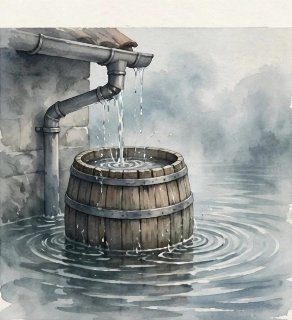
A rain barrel under a gutter holds ripples spreading on its surface.
The fourth parcel is a beloved one, and the house handles it with the care due to things visitors are fond of: the feeling as nostalgia, the heart's homesickness for its own past. The resemblance is real and the house concedes it freely — some afternoons the feeling does stand in the light nostalgia casts, and the two weathers share a border for whole hours at a time. But the register's careful entries draw the boundary where experience draws it. Nostalgia has an address. It can be driven to, named street by street, however idealized the driving. This feeling, tested across ten thousand visits, is homesick the way its third hall described — for a place that, on inspection, was never lived in. The barrel is full of rain that fell here, this week, on this roof. The longing it reflects is not for last year's weather.
The distinction matters because the remedy misleads. If the feeling were nostalgia, the past would be its medicine — photographs, reunions, the retracing of old streets — and the visitor could go, sensibly, and fetch it. The register has watched visitors fetch it, faithfully, for years, and come back carrying armfuls of a perfectly good past and the feeling entirely unspent. The past was not what it wanted. It wanted — insofar as wanting is even the word — nothing retrievable. Laying this parcel down is therefore a mercy disguised as a correction: the visitor is excused from one more expedition to ransack his own history for a key that is not cut from that metal.
Rain in a barrel, rings spreading on its surface: the picture is contemporary, and the block insists on the contemporaneity. The feeling happens now, about now, in a present tense that nostalgia never uses. Its ache wears old clothes — that is conceded, and conceded warmly — but its address is the room it is sitting in. The house returns the visitor to that room, which is where the fifth hall already taught him to sit, and finds that once the nostalgia parcel is down, the sitting is simpler by exactly the weight of one unnecessary journey home.
66Not Loneliness, Not Only
The fifth parcel is loneliness, and it is the subtlest setting-down in the hall, because it is half right. The feeling often arrives when a person is alone, and it often involves a reaching quality, an awareness of distance, a chair that could hold another. The register grants all of it. What it declines is the conclusion. Visitors who have summoned company as the obvious remedy — filled the room, telephoned the faithful, crowded the evening stem to stern with other voices — report with one accord that the feeling attended every event, sat politely among the guests, and rode home with them afterward. It was never the absence of people it was reporting. Something in it is simply not addressed by presence, the way thirst is not addressed by bread, however excellent the bread.
The house phrases the correction with care: not loneliness, not only. For there is, in the feeling, a component that company cannot reach and solitude did not cause — a distance measured not between the visitor and other people, but between the visitor and something he cannot point to, in a direction that has no name on his compass. The register's entries call it, on their most precise days, a elsewhere-awareness: the faint conviction of being expected in a place that does not exist. People are no remedy for it, and their failure to remedy it is not their failing. It is the feeling's nature — to be about an elsewhere that company, being stubbornly here, cannot impersonate.
The empty bench faces an open field, and the block reads the picture generously. The bench is not a picture of abandonment. It is a picture of a specific seat, in specific weather, where a specific visitor sometimes sits beside the feeling and is, in the sitting, not lonely at all — accompanied by the one presence that never solved anything and never claimed it would. Not loneliness, not only. The house writes the phrase over this whole section of the hall, and visitors copy it into their own margins more than any other sentence in the book.
67Not a Debt Owed to Anyone
A lighthouse beam sweeps through mist over dark water.
The sixth parcel is the debt — the obscure conviction, carried in by visitors who would call themselves anything but superstitious, that the feeling must be owed: that it is a bill presented by the past for something left unpaid, a summons over an old account, the emotional equivalent of a letter from an office one has been avoiding. The house sets this down with genuine sympathy, because the conviction usually belongs to conscientious people — the ones who pay what they owe and lie awake over what they might have missed. It is exactly that conscientiousness the register addresses. The feeling is not dunning anyone. It keeps no ledger. Its arrival creates no obligation, and its departure discharges none, and the house will keep repeating this until the conscientious visitor's shoulders come down.
There is a difference, the keeper notes, between a feeling that visits and a feeling that invoices. The real debts of a life announce themselves plainly enough — they have names, dates, and faces, and they belong to an entirely different hall of the building, where they are dealt with by daylight and by letter. This guest belongs to the weather section. It does not want an apology for an unspecified something. It does not want restitution, penance, or the retrospective improvement of the visitor's twenties. It does not, the register says with unusual bluntness, want anything at all. Weather is the world's only visitor that never presents a bill, and it is churlish to keep checking its hands for one.
The lighthouse beam sweeps through mist over dark water, asking nothing of the ships it was not built for and warning only the ones on the rocks. The feeling is not that beam. The house chooses the picture precisely for the contrast: here is a light with a duty; here, in the visitor's chest, is a light with none. To be owed nothing — to sit in the presence of an arrival that creates no account — is, for the conscientious, the strangest mercy in the hall. It is also, the register observes, the one they describe afterward as rest.
68Not Proof of Anything
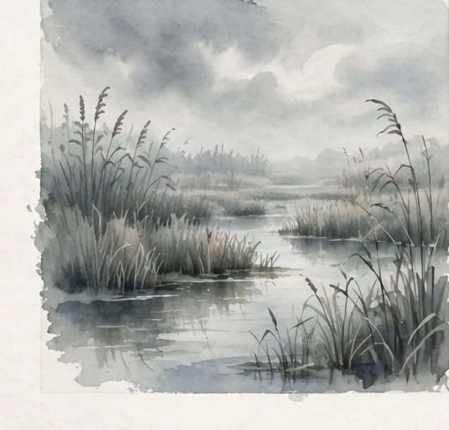
A quiet marsh of reeds stands under a grey sky.
The seventh parcel is evidence — the feeling carried into the hall as though into a courtroom, to be entered as proof: proof that the visitor is deeper than his neighbors, or sadder, or more finely made; proof that his life took the right turn, or the wrong one; proof, on the bad days, that something about him is irreparably amiss and the feeling is the signature at the bottom of the finding. The house sets this parcel down almost sadly, because the feeling makes such poor evidence. It proves nothing, in any direction, about anyone. It visits the shallow and the deep with perfect impartiality. It has been recorded in the register at the tables of the wise and the foolish, the flourishing and the floundering, and its distribution across those tables follows no pattern that flatters or condemns a single one of them.
That impartiality is, the keeper maintains, the feeling's dignity. A thing that arrives as proof is immediately conscripted — it stops being itself and becomes an argument, and arguments must be defended, and the visitor ends up defending a Tuesday's weather as if it were his thesis. The house declines the conscription on the feeling's behalf. The marsh in the plate proves nothing about the river it borders or the sky it reflects; it is a marsh, standing in its own water, and its refusal to testify is not evasion. It is the correct behavior of a landscape. So with the feeling. It will not state what the visitor is. It never knew. It was only passing through his climate on its own errands, which are not errands, being weather's.
Visitors sometimes fear that without the feeling as evidence, something about them goes undocumented — the depth unproven, the sensitivity uncertified. The keeper's answer is the gentlest entry in this hall: the documents were never required. A life is not a case, its owner is not perpetually on trial, and the weather in his chest is not an exhibit. Set the parcel down. What remains in the visitor's hands afterward is the feeling itself, lighter by the whole weight of having to mean him — and, for most visitors, that remainder turns out to be the first time they have actually felt it plainly.
69Not an Emergency
The eighth parcel is urgency. It arrives hot in the visitor's hands even in this grey house: the conviction that the feeling, being unexplained, must be explained now — that an unnamed thing is an emergency by definition, that to sit beside it unhurried is negligence, that somewhere a clock appropriate to it is ticking. The house sets this parcel down with both hands and some firmness, because urgency is the one parcel that damages the others. A visitor in a hurry cannot sit, cannot refrain from interrogating, cannot let the rain simply be watched. Urgency makes every other doctrine in the building unusable, and so the hall deals with it directly: this feeling is not an emergency. It has never once, in the register's long record, required anything to happen within the hour.
The evidence for the calm is the feeling's own track record. It has arrived in the lives recorded here thousands of times, and on no recorded occasion did the sky proceed to fall before supper, or the unexplained hour turn out to have been a fuse. What actually happens to an unexplained feeling, given no action whatsoever, is that it sits for a while and then it leaves, and the house takes the entire history of those departures as its charter. Emergencies are real, the keeper concedes — elsewhere, in other halls, with other signatures. They have sirens in their voices and instructions in their hands. This guest has neither. Its quiet is not the quiet before anything. It is just quiet.
The clock on the wall of the plate has a plain face and no numerals, and the register adopts it as this block's small monument. Time passes in the feeling's company — that is undeniable, and sometimes the passing is the whole ache of it — but it passes at the ordinary rate, unweaponized. The visitor who sets down urgency finds the afternoon restored to its actual dimensions. The feeling keeps its size, which was never the size of a crisis. And the hall exhales, in its grey and deliberate way, and moves on to the lighter parcels.
70Not a Performance
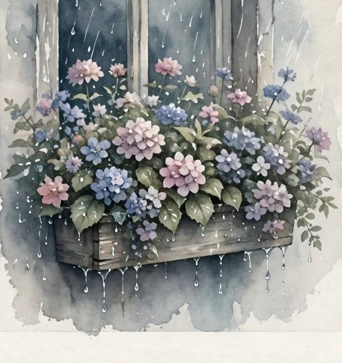
A window box of flowers stands still wet after rain.
The ninth parcel is the performance — the quiet suspicion, which visitors are often ashamed to confess, that the feeling is something they are doing: an affectation learned from novels, a depth rehearsed for an audience of one, a piece of weather they generate themselves on slow afternoons for want of better drama. The house sets this down with a smile, the only smile in the hall, because the suspicion dissolves the moment it is examined in the register's light. A performance requires an audience and a payoff, and this feeling is notoriously bad at both. It arrives unphotogenically, at inconvenient hours, in the middle of errands. It has never once improved its host's conversation, burnished his image, or timed itself to the presence of witnesses worth impressing.
Indeed, the register notes, the feeling is one of the least performative events in a life. It does not occur when the visitor is watching himself think; it occurs when he is washing a cup, or waiting for a kettle, or walking the unremarkable middle of a street, and it has the period charm of true weather — it is entirely uninterested in being seen. Visitors who accuse themselves of staging it are invited to consider the staging's total failure as a production: no applause, no reviews, no second act, only a grey hour and a slightly puzzled host. Whatever this is, the market for it has never existed. It is safe to conclude it is not for sale, and not a show.
The flowers in the window box are wet after rain, and the picture is the block's whole argument in one frame. They are not performing wetness. The rain happened to them the way the feeling happens to its host — from outside his direction, without consulting his schedule of selves. The house leaves the parcel here, with the others, and notes for the conscientious self-accuser that the feeling's indifference to his opinion of it is among its most trustworthy qualities. It will go on arriving, unstaged, for as long as he has weather.
71Not the Same Twice
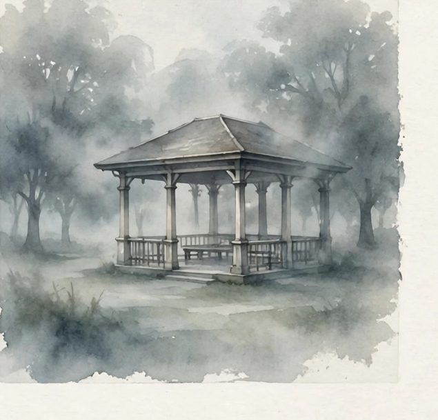
A small open pavilion stands in a park, wrapped in fog.
The tenth parcel is the expectation of consistency — the assumption that the feeling, once catalogued, will present itself the same way twice, so that a method can be perfected and the visitor can greet it next time with the confidence of procedure. The house sets this down almost wistfully, because the wish for a method is understandable and the register itself was born of it. But the record is unambiguous. The feeling does not repeat. It rhymes, at best. The visit of March is not the visit of October; the weight has moved, the hour is different, the thing it resembles has changed its mind. Visitors who greet it with last time's procedure find their hands full of yesterday's arrangement while today's weather stands politely aside, unhosted.
This is not the feeling being difficult. It is the feeling being weather, and weather's whole constitution is that it does not perform encores. The house draws from this a gentle operational conclusion: the methods of the fifth hall are not techniques but postures, because postures adapt and techniques do not. A chair, a cup, an unhurried hour — these fit every visit because they commit to nothing about the visit's shape. The register's advice is to keep the postures polished and the expectations loose, the way the keeper keeps the pavilion in the plate swept and its benches dry, without pretending to know which afternoon's fog will fill it.
The pavilion wrapped in fog is the same structure as last week's pavilion in sunlight, and the block closes on the fairness of that. The building does not change; the weather does; and all the intelligibility is in the building. So with the visitor. He is the structure. His steadiness is the only repetition available, and it is enough. The feeling will not be the same twice — but the welcome can be, and the register's final word in this block is that a repeatable welcome is worth more than a repeatable guest.
72Not Knowing Is Allowed
The hall of negations ends with the parcel that was underneath all the others: the shame of not knowing. Visitors carry it in last because it is the one they mind most — not that the feeling is a symptom or a message or a debt, but that they, who know their own minds tolerably well in other departments, cannot say what is happening in their own chest on a grey afternoon. The house sets this parcel down with both hands and something like ceremony. Not knowing, here, is allowed. It is not a preliminary state to be ashamed of while awaiting knowledge. It may be the permanent and accurate condition, and the register's oldest pages suggest it usually is.
The keeper is careful to distinguish this not-knowing from ignorance, which is a failure to look. The visitors of this house have looked — four halls of looking, in fact, before arriving at this one. They have traced the origins, tested the descriptions, tried the names, borrowed the foreign words, sat the long sittings. The not-knowing that remains after all that looking is not a gap in the investigation. It is the investigation's finding. Some weather is permanently unexplained the way some coastline is permanently unmapped — not because no one sailed it, but because the mist is part of the territory and the chart that omits the mist would be the one false document in the building.
The blank page in the open book is the hall's last exhibit, and the house leaves it exactly as it is. A blank page in a kept book is not an error; it is a true entry for a day on which what happened was not sayable. The keeper closes the hall on that image, with the parcels crowding the long table behind him — symptom, message, warning, debt, proof, emergency, performance, all set down — and the feeling standing in the doorway, unburdened, unexplained, and entirely welcome to proceed into the next hall, where what it leaves behind will be counted, gently, and without a single verdict among them.
73What It Leaves Behind
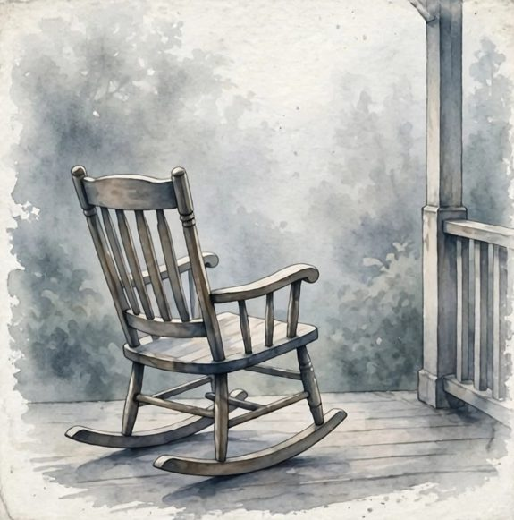
A rocking chair on a porch faces a wall of mist.
The seventh hall is the house's accounting room, though its accounts are kept in a currency no other hall accepts. The question it asks of every visit is the one a host asks of a departed guest without quite admitting to curiosity: what did it leave behind. Not what it meant — the sixth hall disposed of meaning, thoroughly and for good. What it left. A film on the furniture, a difference in the light of the following days, some small residue in the visitor's habits that was not there before the weather came through. The keeper keeps this hall's register with a lighter hand than the others. Residues are shy. Written down too firmly, they begin to look like lessons, and the house has sworn off lessons disguised as anything.
The first thing to say about the leavings is that they are modest, and that their modesty is their credibility. The feeling does not leave revelations. It does not rearrange the visitor's life, pay his debts of attention, or hand him a sentence to live by. It leaves what an afternoon of rain leaves in a garden: everything in place, everything slightly altered, the alteration real and entirely undramatic. Visitors who arrive at this hall expecting transformation are advised to lower the expectation to the level of the evidence. What the unexplained feeling leaves behind is measured in degrees, in habits, in a tenderness with no forwarding address — the subjects of the blocks that follow, each small enough to be true.
The rocking chair on the porch faces the mist the feeling came out of, and it is empty now, and still moving, very slightly. The house takes the chair as this hall's emblem without further comment, because the comment is the chair: motion remaining in furniture after the sitter has gone. Something sat here. The sitting is over. The movement is the remainder, and it fades on its own schedule, exactly like the thing that caused it. The seventh hall simply keeps the porch swept and the chair in repair, and invites the visitor to notice what, in his own rooms, is still moving gently after the weather has passed.
74A Slightly Larger Room
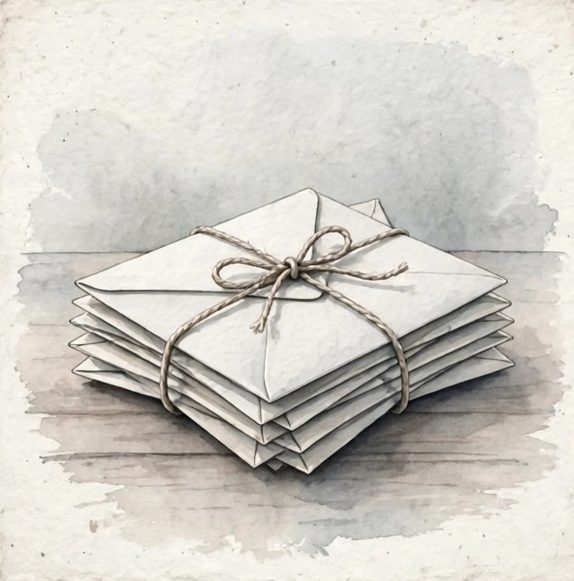
A small stack of blank envelopes, tied with string, rests on a table.
The first residue, in the register's long ordering, is space. Visitors report it in almost the same words across the decades: the room feels larger. Not the room they sat in — though that too, sometimes — but the room they live in, the interior one, the chamber where the feeling was hosted. It is as though the visit, by occupying the space fully and then vacating it, had remeasured it. What returns to the visitor after the feeling leaves is his own interior, swept and aired, and measurably more spacious than the version he was keeping before — as if a guest who rearranged nothing had nonetheless shown him that the walls were farther apart than he had been living as though they were.
The house has a plain way of understanding this. A feeling unresisted takes up exactly its own room and no more. A feeling resisted — interrogated, evicted, performed against — takes up the whole house, because the resistance is stationed in every chamber at once. The visitor who sat quietly discovers, when the guest departs, how much of his interior the struggle had been renting. The struggle moves out with the weather. What stays is the discovery of square footage he had forgotten he owned: a margin around his thoughts, a little distance between him and his days, in which ordinary life becomes noticeably easier to conduct.
The blank envelopes tied with string are the plate's quiet commentary: messages never needed, kept neatly anyway. Space, in this hall, is often like that — capacity preserved rather than used, the margin rather than the text. The register does not urge the visitor to fill the larger room. Filling is how it got small. He is urged only to notice it, the way one notices a house gone quiet after guests, and to enjoy the slightly echoing quality of his own next few thoughts, in the room the feeling left larger than it found it.
75The World, a Degree More Vivid
The second residue is acuity, and it arrives disguised as its opposite. For a day or two after a visit, visitors report, the world looks more itself — colors at their posted values, the grain of wood worth looking at, the faces of strangers neither beautiful nor plain but present, with a clarity that makes the visitor suspect his eyes. The register suspects nothing of the kind. The eyes were not improved. The attention was rinsed. A person who has spent an afternoon attending to weather that cannot be named has been practicing, without knowing it, the purest form of looking: sustained, unrewarded, precise about the seen and honest about the unseen. The practice leaks, afterward, into everything he looks at.
The house is careful to keep this claim small, because it is a true one and true claims bruise easily. The effect lasts days, not years. It does not extend to the visitor's judgment, his memory, or his character, and it makes no one wiser. It is an optical residue, nothing more: the world a degree more vivid, the way a street is a degree more vivid after rain has washed it — not transformed, just cleaned of the dust of being unlooked-at. But the register notes that visitors prize this residue out of proportion to its size, and the keeper understands why. Most people suspect, correctly, that they live in a more vivid world than the one they have time to see.
The spectacles on the windowsill are this block's small joke at its own expense: the instruments of seeing, set down, while the seeing improves anyway. The improvement was never optical. It was the discipline of the fifth hall, portable after all. The visitor is sent on from this block with no instructions, because instructions would thicken what the residue does best when thinned: he will look at his street, his supper, his own hands, with the feeling's borrowed attention, and the street will hold the light a fraction longer than it used to, and that fraction is the whole entry in the book.
The Feeling Desk
One desk receives all correspondence for this house — questions, corrections, and word of any feeling a visitor cannot explain: where it came from, what it resembled, how long it stayed. It is read in the order it arrives, and nothing sent to it is diagnosed, interpreted, or explained back.
76A Tenderness Without an Address
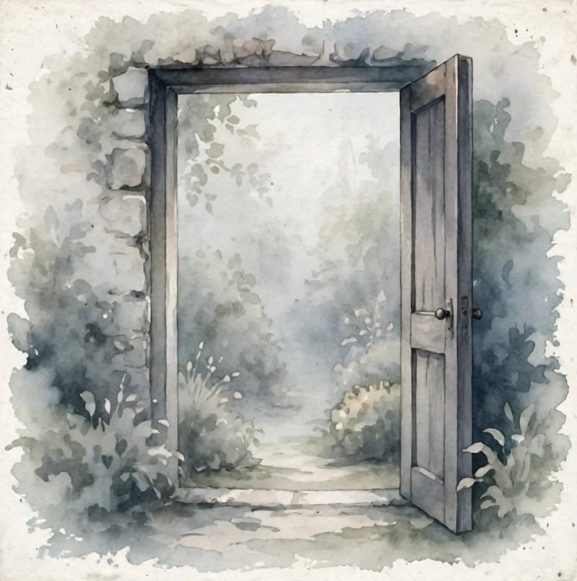
A doorway opens onto a garden wrapped in fog.
The third residue has no object, and the register has stopped apologizing for that. Visitors describe a tenderness — unmistakable, sometimes embarrassingly strong — that attaches to nothing in particular. Not to a person who could receive it, not to a memory that could explain it, not even to the feeling itself, which has left. It moves through the visitor like weather through an empty house and settles, if it settles at all, on whatever is nearest: the kettle, the neighbor's fence, the stranger holding a door. The house records this residue with respect, because it may be the purest thing the feeling produces — affection with its address label blank, love's raw material before the world has assigned it.
The keeper's doctrine here is deliberately unambitious. The tenderness is not to be redirected, banked, or interpreted as a sign about anyone. It has no address because it is not mail. It is climate. The visitor is simply advised not to be alarmed by it, and not to waste it on suspicion — his own first instinct, often, is to audit the tenderness for what it must mean about the people in his life, and the audit finds nothing, because there is nothing to find. It means what the vividness meant, what the larger room meant: that weather passed through, and passing, left the house in slightly better condition than it found it, in ways too general to be itemized to a recipient.
The doorway onto the fogged garden is the plate for it, chosen by the keeper himself, he says, on a day this residue was strong in him. A threshold, a garden, mist equalizing everything beyond the step — the tenderness goes out that door and blesses the whole obscured garden at once, the roses and the weeds and the fence at the same dilution, which is exactly how visitors describe it: nothing singled out, everything slightly forgiven. The hall records the residue and moves on, trusting that what has no address also cannot be misdelivered.
77The Habit of Noticing
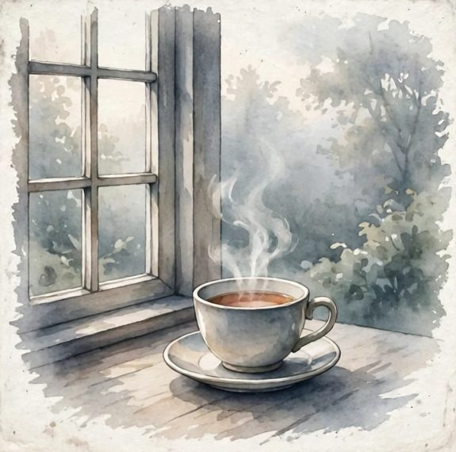
A cup of tea steams gently beside a window at dawn.
The fourth residue is a habit, and it is the one the keeper values most, because habits outlast weather. The visitor who has sat with the feeling — noticed it, refused to interrogate it, kept it company at a lower volume — has been practicing noticing itself, and the register's later pages, the follow-up entries the house keeps for years afterward, show the practice persisting long after any single visit is forgotten. The visitor begins to notice other things at the same resolution: the hour's light, the exact grey of a Tuesday, the mood he is in before he has a name for it, the mood of a room before anyone speaks. The feeling was, among its other non-purposes, a tutor — the only one, the keeper remarks, who never knew he was teaching.
The house is careful about the word habit. It does not mean a regimen, and this hall issues no exercises. The residue is subtler: a slight lowering of the threshold at which things get noticed at all. Most people live, by necessity, with their attention set to catch only what is loud, urgent, or named. A visit from the unexplained feeling recalibrates the instrument by a degree — things just below the old threshold begin to register, quietly, in the following weeks. The visitor finds himself knowing what the light is doing at four in the afternoon. He has never known this before. He did not decide to know it. The register enters it, simply, under leavings.
The cup at the dawn window is the emblem: steam, first light, a person awake inside a house not yet loud with the day — and noticing, precisely, that he is noticing. The house does not claim this residue for itself, and it certainly does not claim it happens to everyone. It claims only that of all the things the feeling leaves behind, this is the one visitors write back about, years later, in letters that begin with the same puzzled gratitude: ever since that grey afternoon, I have been seeing the afternoons. The keeper files the letters without reply. Some residues answer themselves.
78A Song Hummed for Days
The fifth residue is a tune. It surprises every visitor it happens to, and the register, which has logged it for decades, has stopped being surprised at anything except how consistent the reports are. Somewhere during or just after a visit, a melody takes up residence — a half-remembered song, a phrase of something heard in another year, occasionally a tune the visitor cannot place at all — and it remains, hummed at sinks and bus stops, for days. The feeling leaves; the tune stays behind like the guest's glove on the hall table. The house does not interpret the glove. It simply notes that the visitor's days acquire, for a while, a faint musical accompaniment that nobody ordered.
The keeper's private theory — it is in the register marked as private, and the house offers it as nothing more — is that the feeling and the tune are the same kind of object. A melody half-remembered is the ear's version of the unnamed feeling: present, shapely, affecting, and entirely resistant to being stated in words. You cannot say a tune. You can only have it, lose it, and have it again. The feeling, departing, may leave its own shape behind in the visitor's ear because the ear is where that shape fits best — weather finding the one window it can be heard through after the room has been vacated.
The register is firm on one point: the tune is not a clue. It does not decode the feeling, commemorate it, or carry its message — the sixth hall has relieved the guest of messages permanently. The tune is a residue, full stop: the hum in the walls after the weather, pleasant, meaningless, and oddly companionable. The visitor hums it while working and is, for those days, a slightly more musical animal than he was. The house files the report. When the tune finally goes, usually mid-phrase at an unremarkable moment, it goes the way the feeling went: without a summary, and the silence after it has the same quality of completeness.
79Kindness, Unexplained as the Feeling
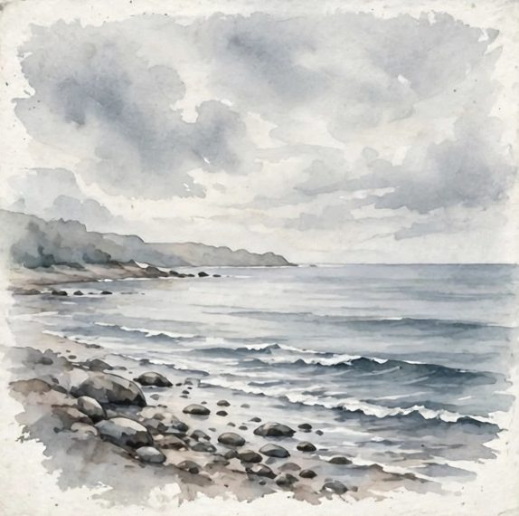
A quiet shoreline shows small waves under a grey sky.
The sixth residue is kindness — and the house words this entry with more care than any other in the hall, because kindness is the easiest residue to spoil by praising it. Visitors report, in the day or two after a visit, an uncharacteristic patience with the world's small frictions: the slow clerk, the neighbor's noise, the stranger's awkwardness at a doorway. Nothing in them has been argued into virtue. The feeling, unexplained as it was, seems to have left a matching unexplained gentleness behind it, and the visitor finds himself spending it without deciding to. The register's phrase for it is exact: kindness, unexplained as the feeling. It does not know its reasons either. It simply follows the weather through.
The house offers no mechanism and suspects all the mechanisms it has heard. Its record is behavioral and plain: a person who has been sat with — by himself, in the chair by the window, without interrogation — tends, briefly, to sit with others the same way. The clerk is not interrogated about the delay. The neighbor is not evicted from the visitor's regard. The stranger is not required to explain himself at the door. It is the fifth hall, exported. The visitor practiced company without conditions on the hardest possible subject, his own unexplained weather, and the practice, like the noticing before it, leaked into the general conduct of his days.
The shoreline and its small waves are the register's chosen close. Kindness of this residue kind is not a tide and does not pretend to be; it is small water, arriving in modest sets, going back, arriving again, altering the shore by courtesies too small to name individually. The visitor will not remember most of the kindnesses, and neither will their recipients, and the house insists the entry is better for it. What the unexplained feeling leaves behind, at its best, is an equally unexplainable decency — unwitnessed, unrecorded except here, and as temporary and as real as weather.
80The Urge to Write It Down
A bell hangs in a small open tower against slow clouds.
The seventh residue is the urge to write it down, and it brings more visitors back to the Feeling Desk than all the other residues combined. The visit is over; the feeling is gone; and the visitor, who is not a writer — the register underlines this; most of them are emphatically not writers — finds himself reaching for a notebook with a specific and slightly sheepish urgency. Not to explain the feeling. Every hall of this house has beaten the explanation out of the enterprise. To mark it. To get down, before it thins, the images it traveled with: the light, the room, the exact quality of the grey. The step ten of this house's own staircase will one day formalize the urge. This hall simply records that it comes, unbidden, like all the feeling's other weather, and that it is to be obeyed in the same spirit: lightly, and without a theory.
What gets written, when the urge is obeyed, is never what the visitor expected. He sits down to record a feeling and produces, instead, a description of a kitchen at four in the afternoon that is truer than anything he has written in years. The feeling is nowhere in it by name. It is everywhere in it by accuracy. The register keeps a shelf of these documents, donated over the decades, and they are — the keeper will tell any visitor who asks — the best literature the house owns: page after page of weather reports from interiors, written by people who disclaim authorship while producing it.
The bell in the open tower is the emblem, and the house lets the visitor draw his own conclusion from it. A bell is rung, usually, to announce — but this one hangs against slow clouds in an empty tower, rung by no one, announcing nothing, simply available to the wind. The urge to write the feeling down is much the same: an instrument sounded briefly by weather that has already left the tower. What the visitor writes will not summon the feeling back. It will do something the house considers better. It will prove, to exactly one reader, that the afternoon happened — and that reader, on some future grey day, will be the visitor himself.
81A Photograph Taken of Nothing Special
Sometimes, in the hours after the feeling has passed, the visitor finds a photograph on the telephone that was not planned: an ordinary corner of the street, a fence, a patch of sky between two roofs. Nothing in it explains itself. The hand took it before the mind had voted, the way the hand reaches for a railing on a stair it has climbed a thousand times. The house keeps such photographs in the register without embarrassment. They are the feeling's footprints, and a footprint is not required to resemble the foot.
It would be easy to make too much of this. The photograph is not evidence, and the house does not hang it in a frame or ask what it means. It is simply proof that attention, for one second, was pointed somewhere by something other than habit. Most days are photographed, if at all, at their ceremonies. This one was taken at a fence. The register notes the disproportion with respect, because the feeling itself had the same shape: small occasion, large weather, no apology offered by either.
Kept in the drawer, the photograph does quiet work over the years. It refuses to become a souvenir, because nothing happened in it, and so it stays honest when grander pictures have begun to perform. Looking at it, the visitor remembers not an event but a climate, and remembers it accurately, which is rarer. The Feeling Desk approves of records that know their own size. A photograph of nothing special, taken for no reason, is the feeling's most faithful portrait, precisely because it declines to pose.
82Slowness, Briefly Practiced
A glass greenhouse stands in gentle rain, its panes streaked and glowing faintly.
Among the things the feeling leaves behind, the register lists a brief and unlegislated slowness. For an hour, or an afternoon, the visitor moves at the pace of weather rather than the pace of errands. Tea is made at the speed tea requires. A letter is answered after the sentence has finished forming. Nothing has been decided; no new philosophy of time has been adopted. The feeling simply walked slowly, and the visitor, keeping company, slowed to match it, the way one slows beside an elderly friend without discussing the matter.
The house is careful not to praise this too warmly, because praise would turn it into a technique, and techniques are precisely what the feeling never asked for. Slowness here is not a remedy and not a discipline. It is a side effect, the way wet grass is a side effect of rain. The visitor who tries to keep it by force will find it gone by Thursday, and that, too, is recorded without alarm. What was borrowed from the weather is returned to the weather. The register only notes that for a while the shoulders were lower.
What remains after the slowness goes is not the pace but the memory that the pace was survivable. The day did not collapse for having been walked instead of run. Errands forgave the delay, as errands usually do when nobody consults them in advance. The Feeling Desk counts this among the feeling's modest gifts: not a lesson, which would be too much architecture for so plain a thing, but a demonstration, quietly filed. The body keeps the demonstration long after the mind has lost the paperwork, and some later, hurried week is gentler for it.
83Gratitude Without an Object
A long wooden table stands in an empty hall, one tall window lit at its end.
Now and then the feeling leaves behind a gratitude that has misplaced its address. The visitor is thankful, distinctly and even warmly, and cannot say to whom or for what. The usual objects are audited and found innocent: the health is ordinary, the news is mixed, the day contained no rescue. Yet the thanks persists, standing in the room like a guest who has forgotten which house he came to, and is content to stay anyway. The register receives this gratitude without trying to deliver it anywhere.
Custom insists that gratitude be routed, that it name a benefactor and settle an account, and unaddressed thanks can feel like an error in the bookkeeping. The house disagrees. Some gratitude is not a payment but a climate, the emotional equivalent of light falling evenly across a whole field rather than on one rewarded flower. It does not diminish the specific thanks owed to specific people; those are entered separately, in their own ledger, with names. This other kind belongs to no ledger. It is the feeling's weather, clearing.
The visitor is advised to let it be unaddressed for as long as it lasts, which is seldom long. It will fade, as the feeling faded, without ceremony, and nothing will have been wasted. A thanks said to the room, to the hour, to no one in particular, is not a smaller thanks. The Feeling Desk has noticed that people who permit themselves this unrouted gratitude are not less grateful to their friends afterward. If anything, the accounts settle more easily, the way a field drains better after general rain than after one dutiful watering.
84The Door Left Ajar for It
The last thing the feeling leaves behind is not an object but a position: a door, somewhere in the house of the visitor's habits, standing ajar. Not open in invitation, not closed in conclusion — ajar, the width of a hand, the way doors rest when nobody has decided anything about them. The register considers this the feeling's natural monument. It asked for so little while it was here. It seems only accurate to leave the architecture slightly unlatched in its honor, without turning the gesture into a vigil.
There is a temptation, after a visit that mattered, to build something at the threshold: a shrine, a schedule, a promise to feel it again properly next time. The house discourages construction. A door ajar is not a trap and not an altar. The feeling may return by it in a year, or never, or return so altered that nobody recognizes the knock. All of these outcomes are filed as acceptable. What the open crack really declares is simpler: that the house is no longer sealed against its own weather, and that this unsealing cost nothing and frightens no one.
Visitors sometimes ask whether the door should be guarded, in case other, worse weather enters by the same gap. The Keeper of the Unnamed Feeling answers that doors ajar are how houses breathe, and that the feeling was never the dangerous guest in any case. The dangerous guest was always the sealed room. So the hall ends where the register prefers its endings: without a summary, without a moral nailed above the lintel. Only a door, resting half open onto the mist, and a house that has learned to leave it exactly so.
85Trying to Tell It
A sandy path winds through pale dunes toward a grey, patient sea.
This hall concerns the moment the feeling, still unnamed at home, is carried into company and offered to another person. It is a hazardous journey for so quiet a thing. Spoken aloud, the feeling must survive grammar, which wants it to have a subject and a cause. It must survive the listener's face, which begins arranging responses before the sentence ends. And it must survive the teller's own embarrassment, which arrives early and speaks first. That any feeling completes this journey at all, the register notes, is a small tribute to friendship.
Most tellings begin with an apology, and the house suggests retiring it. The apology assumes the feeling owes the listener a shape it does not have. A plain beginning serves better: the hour it came, the light, the song half-heard through a wall. Description travels; explanation stalls. The teller who reports the weather faithfully, without claiming to know what produced it, gives the listener something solid to stand beside. The teller who opens with a theory gives the listener only the theory, and the feeling waits outside the conversation like a dog at a door.
Nothing in this hall promises that telling will succeed, or that it should always be attempted. The following rooms take the possibilities in turn: the plain statement, the listener who helps by not helping, the laugh, the image, the rare answering weather in another chest. The Feeling Desk asks only that the attempt, when made, be judged by the standard of weather reports rather than confessions. A report can be accurate without being complete. A telling can be true without the feeling ever being named.
86"I Can't Explain It," Said Plainly
A pendulum wall clock with a completely plain face, no markings, ticks in a hallway.
There is a sentence the house recommends keeping in good repair: I can't explain it. Said plainly, without flinching or flourish, it is among the most accurate sentences available to the inner life. It does not surrender the feeling, and it does not inflate it. It marks the exact border of the teller's knowledge, which is further in than most people admit and shorter than most people pretend. In the register's long experience, the sentence ends more false conversations than any other, and begins more true ones.
The plainness is the whole art. Said with a laugh, the sentence becomes a dismissal, and the feeling is laughed out of the room with it. Said heavily, as a tragedy, it becomes a demand, and the listener is handed a weight that was never theirs to carry. Said plainly — the tone one uses for the time, or for rain expected by evening — it simply opens a space at the table. The feeling can sit in that space, unexplained, in company, which is often all it ever wanted and rarely gets.
Listeners, the desk has observed, trust the plain sentence more than any description that follows it. A person willing to say exactly where their knowledge stops is believed about everything before the border. So the teller's credibility is not damaged by the admission; it is built by it. The rooms that follow examine what listeners do with such a sentence, good and bad. But the sentence itself stands in the register as a complete instrument: four small words of limit, honestly placed, doing the work of a paragraph.
87The Listener Who Does Not Fix It
Every telling hopes, whether it admits it or not, for a particular kind of listener: the one who does not reach for tools. Such a listener hears the plain sentence and lets it stand. No remedy is proposed, no similar case is rushed in for comparison, no cheerful verdict is delivered over the feeling like a lid. The listener simply stays in the room of the conversation, at the same volume as the teller, until the weather has been fully reported. The house keeps a chair by the window reserved, in spirit, for listeners of this kind.
Their restraint is not passivity, and the register is careful to honor the effort it costs. Every instinct of kindness shouts to fix, to reassure, to hand the teller a name for the thing so the evening can proceed. The good listener hears those instincts and declines them, one by one, in silence. What they offer instead is rarer and harder: unhurried attention, and the refusal to be made uncomfortable on the teller's behalf. A feeling received this way does not shrink in the telling. It keeps its true size, which is the beginning of its leaving.
Such listeners are not born, the desk believes; they are made, usually by having once been badly listened to themselves and remembering the exact texture of it. The visitor who finds one should not mistake the quiet for indifference, or test it with escalating drama. It is a discipline, like the stillness of someone holding a ladder. The feeling, told into that stillness, does something it seldom does under interrogation or comfort: it finishes. Not explained, not solved — finished, the way a piece of weather finishes, by moving through and out.
88Laughed Off, and Surviving
A folded wool blanket rests on a bench beside a window, ordinary and unbothered.
Not every telling lands on a quiet listener. Some land on a laugh — the friend who hears the first two sentences, decides the whole thing is a mood, and changes the subject with the efficiency of a man closing a window against a draft. The register records the laugh without bitterness. It is a common weather of its own, and it says more about the listener's sealed rooms than about the feeling, which has been laughed at by better audiences and remains entirely itself.
What deserves noting is the feeling's conduct afterward. It does not die of the laugh. Tellers expect it to — expect the mockery to puncture it like a balloon — and are surprised, later, to find it intact in the evening kitchen, unchanged in pressure and temperature. A feeling that cannot be explained turns out also to be difficult to embarrass. It was never standing on the listener's belief in the first place. The teller learns, from the failed telling, something the desk counts as valuable: whose rooms are open, and whose are not, and that the knowledge costs nothing but one draft of dignity.
The house advises no revenge and no second attempt on the same door. The laugh is information, filed beside other information about the friendship, which may be excellent in every other climate. Some people are splendid in emergencies and hopeless in weather. The feeling, for its part, asks no apology and keeps no score. It will accept being told elsewhere, or nowhere, with equal calm. What it will not do — and the register underlines this with quiet satisfaction — is revise itself to be more believable at breakfast.
89Told in Images, Not Terms
A flooded meadow holds the pale sky in still water, reflecting it like a mirror.
When terms fail, and they usually do, the teller has one honest instrument left: the image. Not a name for the feeling, but a picture of its neighborhood. It is like standing in a field and hearing a train somewhere far off. It is like the light at the hour when the lamps have just come on. Such sentences do not pretend to define anything. They point, the way one points at a landscape rather than describing the road to it, and a good listener can stand where the finger aims and look for themselves.
The register keeps a small anthology of these pointings, and their accuracy is striking even when their content is plain. A flooded meadow holding the sky. A room in a house never lived in, kept ready. Weather crossing a valley the teller is not standing in. None of these explains the feeling, and yet tellers consistently report that the right image lands closer than the right word ever did. The desk's theory is modest: images do not compete with the feeling for the same space. A term tries to replace it. An image makes room beside it.
There is a discipline here, and it is mostly restraint. One image, offered and left alone, does more than a bouquet of them. The teller who keeps improving the metaphor is no longer describing the feeling but admiring the description, and the listener can feel the exact moment of the switch. Offer the meadow, the train, the lamps — then stop, and let the listener's own weather do the rest. If the image is true, it will keep working after the conversation ends, quietly, like light stored in a wall.
90When the Listener Knows It Too
Rarely — the register is honest about the rarity — a telling meets the sentence every teller hopes for and few dare expect: I know that one. The listener's face changes, not with sympathy, which is a thing offered from outside, but with recognition, which is weather reported from the same valley. The feeling, carried so carefully across the room in cupped hands, is suddenly not a foreign object at the table. It has a second witness. Nothing has been explained, and yet everything has been corroborated.
The desk warns against making too much of the moment, because tellers in its grip tend to build. Two people who know the same unnamed weather are still two people, with two weathers that merely share a climate. The recognition is real and the relief is real, and neither licenses a merger of accounts. What the moment actually provides is simpler and sturdier: proof, acceptable in any court the teller keeps, that the feeling is not a private defect of manufacture. It happens in other houses. It has the dignity of a shared climate rather than the loneliness of a personal fault.
Afterward, conversations of this kind usually become quieter, not grander. The two witnesses exchange details the way neighbors exchange notes on a storm — the hour it came, how long it stayed, what it left on the step. There is laughter in it sometimes, of relief rather than dismissal. The feeling itself, doubly witnessed, seems to require less of the teller from then on. The register cannot say why, and does not try. It records the phenomenon the way it records clear mornings: gratefully, and without a theory.
The Feeling Desk
One desk receives all correspondence for this house — questions, corrections, and word of any feeling a visitor cannot explain: where it came from, what it resembled, how long it stayed. It is read in the order it arrives, and nothing sent to it is diagnosed, interpreted, or explained back.
91Two People, One Weather
A small chapel window glows softly in the fog, the building quiet and simple beside it.
When two people discover they keep the same unnamed weather, a particular companionship becomes available, and this house treats it with respect and some caution. It is not intimacy of the usual kind; nothing has been confessed, since there was never anything to confess. It is closer to discovering that a stranger's house faces the same valley as yours. The views are not identical. The valley is. And a great deal can be said, across such a discovery, in very few words, because the largest word — the name — has been agreed unnecessary by both parties.
The caution is this: shared weather tempts its witnesses to found things. Clubs of the feeling, correspondence, a private vocabulary polished until it becomes a new set of terms, as confining as the old. The register has watched this happen and files it under kind intentions. The companionship is healthiest kept at the size of its discovery — occasional, unadministered, free to lapse into ordinary friendship about ordinary things. Two people who can sit in one weather can also simply have tea. The tea matters. It keeps the valley from becoming a doctrine.
What the companionship gives, at its best, is a witness on call for the rest of a life. Not a service; nothing so organized. Just the knowledge that one other person, telephoned in some future year at the onset of the familiar pressure, will not require the long preamble. I can't explain it, the teller will say, and the whole conversation will already have happened. The Feeling Desk knows of no lighter arrangement between two people, and suspects the feeling approves of it, insofar as weather approves of anything at all.
92Telling Is Not Transferring
A row of bare trees lines a misty road, each standing in its own ground.
A misunderstanding waits quietly at the center of many tellings, and this room exists to clear it: the teller is not handing the feeling over. Listeners who flinch from tellings often flinch from an imagined delivery — as though the unnamed weather, once described, will move house and take up residence in them, with its furniture and its hours. The register states plainly that this is not how feelings travel. A report of rain has never yet made a listener wet. What is transferred in a telling is knowledge, not weather, and knowledge is light luggage.
The misunderstanding burdens tellers as much as listeners. A teller who believes the feeling can be offloaded will tell it with a certain pressure, leaning the conversation toward relief, and will feel the telling has failed when the weather is still there at bedtime — as it usually is, unchanged in tenancy. Telling was never an eviction. At its best it is a tour: the listener is shown the flooded meadow, the room kept ready, the view from the chair by the window, and then both parties go back to their own houses, which is where they lived all along.
Understood this way, telling relaxes into its true proportions. The listener owes no rescue, because nothing has been delivered into their custody. The teller owes no apology, because nothing burdensome has changed hands. What has occurred is closer to two neighbors comparing skies over a fence, each standing in their own garden. The Feeling Desk regards this as the mature form of the whole practice: the feeling stays where it lives, the friendship stays where it lives, and the conversation — accurate, unhurried, complete — is the only thing that travels between them.
93Kept Untold, Kept Well
Against the whole drift of this hall, the register enters a balancing truth: a feeling kept entirely untold can be kept entirely well. Telling is offered in these rooms as an instrument, never as an obligation, and the visitor who has carried an unnamed weather in silence for thirty years has not thereby mishandled it. Some feelings are like some letters — written fully, kept in a drawer, and complete in that condition. The absence of a witness is not a defect in the feeling's paperwork. It is one of the recognized forms of its keeping.
The culture of the telling age disagrees, and says so loudly: everything unspoken is supposed to fester, every silence a small failure of courage. The house finds this doctrine noisy and mostly false. It confuses secrecy, which is kept against someone, with privacy, which is kept for something. The untold feeling is usually privacy in its purest form — a weather the keeper has made peace with hosting alone, the way some houses keep a room that guests never see, not from shame but because the room is where the quiet lives.
The Keeper of the Unnamed Feeling admits, when asked, that most of the feelings in the register arrived untold and will leave the same way, and that the keepers of those feelings are not the house's failures but its majority. This room is theirs. It certifies, with the desk's plain authority, that a feeling does not need to have been spoken to have been fully had. It needs only to have been noticed, sat with, and let go in its own time. The rest — the telling, the witness, the shared valley — is furniture. Welcome furniture, some of it lovely. Not load-bearing.
94Not Owed to Anyone's Curiosity
A distant front of rain falls over open fields beneath a dark cloud edge.
Curiosity, when it arrives at the telling, wears two coats, and the teller must learn to tell them apart. In the first coat it is care: the friend who asks because the answer matters to them. In the second it is appetite: the acquaintance for whom an unexplained feeling is a story-shaped hole in an evening, to be filled. The sentences sound identical. The difference is in what the asker does with a refusal. Care accepts it in one breath and talks about something else. Appetite negotiates. The register advises tellers that the negotiation itself is the answer they needed.
The house is firm on the underlying right: the feeling is not owed. Not to curiosity, not to intimacy's bookkeeping, not to the general modern claim that closeness entitles its holders to full disclosure of the inner weather. A person may be deeply loved and still keep one climate unreported, the way even the most open house keeps the room where the pipes run. The teller who says, plainly, that this one is not for telling has not failed the friendship. They have drawn a border that real friendships survive easily and appetite-driven ones were never going to respect.
There is a practical grace in learning this early. Tellers who know the feeling is not owed tell it, when they do tell it, with a freedom that cannot be counterfeited: the telling becomes a gift precisely because it was never a debt. Listeners can feel the difference, though they seldom name it. The Feeling Desk keeps this room swept for the young tellers especially, who are most often taught that love audits everything. It does not. Weather is the one estate that passes to no heir and answers to no audit, and the register intends to keep it so.
95What a Good Listener Gives
A single window is lit in a large dark house at dusk, steady and small.
If the good listener gives anything — earlier rooms praised their restraint, their refusal of tools — it is worth naming the gift precisely, because it is not nothing. The good listener gives the feeling a size. Under interrogation, feelings inflate. Under comfort, they are pressed small. Under the good listener's attention, the feeling is allowed its actual dimensions, which are usually modest and always specific: this pressure, this hour, this long. A teller leaves such a conversation knowing the weather's measurements for the first time, and measurements, unlike names, can be carried home and used.
The second gift is time. The good listener does not watch the conversation's clock, does not summarize the teller back to themselves at intervals, does not reach the end of their patience audibly. The feeling, which keeps its own schedule and distrusts all others, recognizes this unhurriedness as the condition of its accurate reporting. It says more in twenty unpressured minutes than in an evening of being helped. The register has measured this in its own way, across many tellings, and trusts the measurement more than any theory of the matter.
And the third gift, the one tellers remember years later, is belief without inventory. The good listener believes the report the way one believes a neighbor about rain on the next hill — without requiring the teller to produce the rain. No cross-examination of the evidence, no request for a second example. Just the plain acceptance that weather occurs where it occurs. The Feeling Desk suspects this is why the plain sentence, I can't explain it, is so often answered best by silence and a refilled cup. The silence is not empty. It is the sound of a report being filed exactly as given.
96Shared Without Being Solved
The hall of telling ends on the outcome the house considers complete: a feeling shared between two people, and solved by neither. Nothing has been explained. No name has been agreed, no cause assigned, no course of action so much as proposed. And yet the telling has plainly worked, the way a window works — not by changing the weather but by ending the teller's confinement with it. What was carried alone is now carried in company, at the same weight, in two houses. The register knows of no arithmetic by which this is a small thing.
It is worth pausing on how unusual this outcome is in the general run of conversation, where sharing is usually the first step of a solution, and an unsolved sharing is treated as an unfinished one. The feeling does not recognize that contract. It was never a problem presented for repair; it was weather presented for witness. To share it without solving it is not a partial success to be apologized for at the door. It is the entire success, in its intended form, and the teller who grasps this stops grading tellings by whether the feeling went away afterward.
So the hall closes its door gently. Beyond it lies the plainer country of practice — the steps, the small repeatable acts by which a person lives alongside unnamed weather without either worshipping or fighting it. The Feeling Desk sends the visitor there with one sentence from this hall, to be kept like the photograph of nothing special: a feeling does not need to be solved to be shared, and it does not need to be shared to be survived. Both doors stand open. The weather, indifferent to architecture, passes through the house either way, and the house remains standing.
97Step One: Notice It Without Naming It
A rope swing hangs perfectly still beneath a tree in the mist.
The steps begin with the smallest act in this house, and the one on which all the others stand: noticing. When the weather arrives — at the sink, on the stairs, in the middle of an unrelated sentence — the first step is simply to register its presence, the way one registers that the light has changed in a room. No name is to be attempted. No cause is to be assigned, no verdict reached about whether the visit is welcome. The register's phrase for the step is plain: noted. A feeling noted has been given the only greeting it ever asked for.
This is harder than it sounds, because the naming machinery starts on its own. The mind, drilled by years of forms and introductions, rushes to label the guest before the guest has taken off its coat — sadness, nostalgia, nerves, something eaten. Step one asks the visitor to let those first labels pass unfiled, like trains not boarded. The feeling will still be there when the machinery quiets. What is noticed without a name keeps its true outline a moment longer, and that moment is the whole foundation of the practice this hall teaches.
The desk suggests giving the noticing a physical size, because attention follows the body more honestly than it follows intentions. Sit down, if sitting is available. Put the cup down rather than drinking through the moment. Look at the actual window. These are not rituals and should never harden into them; they are simply ways of telling the hands what the mind has decided. Noted, the register writes, and the entry needs nothing after it. The step is complete when the feeling has been seen standing there, unnamed, and neither party has flinched.
98Step Two: Give It a Chair, Not a Courtroom
A lantern stands on a post at the edge of a marsh at dusk, lit against the grey.
The second step concerns furniture. A feeling that has been noticed must be put somewhere, and the visitor has, in practice, two rooms available. In the first stands a chair: the feeling may sit, in company, unexamined, for as long as it stays. In the second stands a courtroom: dock, bench, the bright light of questions — when did you come, what do you want, what are you really. Step two is the deliberate choosing of the chair. The feeling is seated like a guest who has called without an appointment, which is exactly what it is, and hospitality begins.
The courtroom is not wicked; the house is careful about this. Interrogation has its uses elsewhere in a life, for decisions and dangers. But weather does not testify well. Under questioning, the feeling either inflates into a case or shrinks into an excuse, and both distortions belong to the room, not the guest. The chair imposes no such pressure. From a chair, a feeling can be observed at its natural size and in its natural light, which is the only observation the rest of these steps can build on. Accuracy, in this house, begins with seating.
In practice the step is mostly a matter of postponement. The questions will come — they always do — and step two does not forbid them; it schedules them for later rooms, later hours, or never. For now, the visitor practices the older art: making room. A chair drawn up, a cup poured, a silence kept at conversational size. The Keeper of the Unnamed Feeling maintains that no feeling in the register's history has ever been harmed by being sat with first and questioned second, and several have been saved by exactly that order of events.
99Step Three: Note the Hour and the Light
The third step is clerical, and the house makes no apology for it: when the feeling visits, note the hour and the light. Not the cause, not the meaning — the circumstances, in their plainest form. Late afternoon, lamps just lit. Early morning, rain on glass. The register's own entries begin this way, and visitors who adopt the habit are often surprised by how much steadiness a date and a quality of light can give to something that refuses every other kind of fact. The weather has no biography, but it does have a time of arrival, and that can be written down.
There are two reasons for the note, and both are modest. The first is memory: feelings, unexplained in the moment, become doubly unexplained in retrospect, and the teller who tries to recall one a year later finds only a smudge where the visit was. The hour and the light survive when everything else evaporates, and they are enough to recognize the weather if it ever returns. The second reason is proportion. Written in the register beside the week's groceries and appointments, the visit takes its true size — an entry among entries, neither headline nor secret.
The note should be kept short, and this step insists on the brevity as a matter of doctrine. Two lines are plenty; a page is a warning sign. Long entries are where noticing turns into building, and the feeling gets furnished with motives it never brought. Hour, light, one image if one offers itself, and then the pen down. The register's most experienced keepers write the least. What they have learned, and what step three exists to teach, is that a feeling recorded plainly is a feeling half accompanied already.
100Step Four: Try Three Wrong Names, Lightly
A tea tray rests on a garden table just after rain, everything quietly wet.
The fourth step permits what the first step postponed, under two conditions: the names are to be tried lightly, and they are expected to be wrong. Three is the register's number — enough to satisfy the naming machinery, few enough to keep the exercise honest. Sadness, the visitor offers; not quite. Longing; closer, still not it. Something older than both. The names are tried the way keys are tried in a lock by someone in no hurry, and each failure is information of a plain kind: not this door. The feeling, meanwhile, sits in its chair, unbothered by the ceremony.
Lightness is the load-bearing word in this step. A name tried heavily — seized on, believed, announced — stops being a key and becomes a cage, and the feeling will spend the rest of its visit being measured against a word it never agreed to. Tried lightly, a wrong name does no harm at all; it is a coat held up, considered, and returned to the hook. The register encourages holding the names at arm's length, in the grammar of perhaps. Perhaps it is this. Perhaps it is nearer that. The grammar keeps the visitor honest and the guest unconfined.
By the third wrong name, something in the exercise usually settles. The visitor stops expecting the next attempt to succeed, and the stopping is itself the step's destination. What remains is not frustration but a cleaner attention: the feeling, still unnamed, still present, now known at least by its borders — the three directions in which it does not lie. The desk calls this mapping by refusal, and rates it highly. A coastline is known by where the land is not, and a feeling, tried against three honest wrong names, has begun to have a coast.
101Step Five: Borrow a Metaphor Instead
A valley lies completely filled with slow cloud, like a pale, quiet sea.
The fifth step follows naturally from three wrong names: where a term fails, borrow a metaphor. Not invent a doctrine, not promote the picture into an explanation — borrow, the way one borrows a neighbor's ladder, use it, and give it back. It is like weather in a valley I am not standing in. It is like a room somewhere kept ready. The metaphor's whole virtue is its honesty: it announces, in its own grammar, that it is a likeness and not the thing itself. A name claims. A metaphor points, and keeps its pointing hand visible.
The borrowing should stay plain. The register distrusts metaphors that arrive dressed for admiration, because a visitor busy admiring the comparison has quietly stopped attending to the feeling. The best ones in the desk's anthology are nearly bare: a tide somewhere, a pressure before rain, a tune through a wall. Chosen so, the metaphor does a specific piece of work — it gives the teller one sentence that can be carried into company, offered to a listener, and set down without anyone having to believe a theory. Steps to come will use that sentence. This step only mints it.
When the visit ends, the metaphor is to be returned with the same lightness it was borrowed with. It goes back on the register's shelf, available for the next weather, which may or may not fit it. Feelings, the desk has noticed, do not mind being likened twice; they mind being likened forever, into identity. A metaphor kept past its visit becomes a name in disguise, and the whole practice has been a long courtesy against exactly that. Borrow, use, return. The shelf stays orderly, and so does the visitor.
102Step Six: Do Not Interrogate the Guest
The sixth step is a restraint, and it protects everything the previous steps have built. The guest is seated, the hour noted, the names tried and set aside — and now the questions gather, as they always do, at the edge of the chair. Why now. Why this song, this light. What are you for. Step six declines to ask them. Not because the answers are forbidden, but because the asking changes the visit into an examination, and feelings examined at close quarters give the testimony their examiner expects, which is to say no testimony at all.
The restraint is often misread as passivity, and the register corrects the record: declining to interrogate is an act, and a skilled one. It requires the visitor to sit in a room with an unexplained thing and let the unexplaining stand — to resist the particular itch that treats every mystery as a personal assignment. The guest feels the difference immediately, in the way animals feel the difference between a hand and a reaching hand. Under non-interrogation, the feeling settles to its true size and shows its true edges. Under questions, it would have shown only its defenses.
In practical terms, the step asks for one visit's worth of patience, measured in minutes rather than virtues. Let the tea go through its steeping. Let the light finish changing. If a genuine question survives the whole visit — calm, dated, specific — it may be written in the register beside the hour, for the desk, unanswered. The desk collects such questions without urgency, the way harbors collect weather reports from ships already safely in. Most are never answered. The collection is none the worse for that; the asking, postponed, loses nothing.
103Step Seven: Let the Body Finish Its Weather
A window is covered in delicate frost patterns at first light.
The seventh step turns from the chair to the chest. Unexplained feelings are not only mental events; they arrive with a physical delegation — a tightness under the ribs, a lightness in the shoulders, tears standing closer to the surface than the day warrants. Step seven asks the visitor to let that delegation complete its business without commentary. The body has its own weather systems, older than the naming machinery, and they finish what they start if they are not repeatedly interrupted by the mind demanding progress reports.
Finishing, here, has a plain meaning. The pressure rises, and is allowed to rise. It holds, the way a held note holds, neither rescued nor dramatized. Then, on a schedule no one in the house has ever been able to predict or improve, it eases. The whole sequence is usually shorter than its reputation — minutes, often, for what memory later describes as an afternoon. The register's keepers attribute the exaggeration to interrogation: a feeling's physical weather lasts far longer under questioning than under shelter. The step offers shelter, and keeps the kettle within reach.
Nothing in this step asks the visitor to admire the sensation or learn from it in the moment; admiration and lessons are later rooms, and optional ones. The only instruction is non-interference, which the desk ranks among the most trainable skills in the entire practice. Walk a little, if walking is available. Breathe at the pace that arrives rather than the pace prescribed. Then notice, when it comes, that the body has closed the visit in its own ledger. The feeling may still be present in the chair. Its weather, in the chest, will have passed through — and that passage is the step, complete.
104Step Eight: Write Down the Images, Not the Verdict
A metronome stands on a wooden table in soft, even light.
The eighth step takes up the pen again, under a stricter rule than step three's. The hour and the light were noted then; now, if anything is to be written, it must be the images — and specifically not the verdict. A verdict is any sentence that closes the case: what the feeling was, what it meant, what will be done about it. Such sentences are to be left unwritten, not from superstition but from experience. Verdicts age badly. Images age like the photographs of nothing special kept elsewhere in this house: quietly, and into greater honesty.
The images, by contrast, can be trusted to the page without supervision. The flooded meadow. The train heard from a field. The lamps just lit along a street in a country never visited. Written plainly, in the order they arrived, they form the visit's true record — the part that will still be accurate in ten years, when every explanation drafted that evening has become embarrassing in the specific way of old certainties. The register's own archives prove the point on every shelf: the images remain legible across decades; the interpretations require apology.
Practical guidance is short. Write soon, while the pictures are still wet. Write little, because the images do their own expanding in memory and ink mostly fixes their edges. And write without an audience in mind, since a verdict is usually just an image that has started performing for one. The step ends with the pen down and the page unjudged. Somewhere in the house, the guest is still seated or already gone — the writing does not decide. It only keeps the meadow flooded and the lamps lit, at their true hour, against the day the visitor wants to remember the weather exactly.
105Step Nine: Tell One Person, or None
The ninth step offers the choice this house has protected in every hall: tell one person, or tell none. Both are complete forms of the step, and the register insists on the symmetry, because tellings chosen under pressure arrive damaged — flattened by reluctance, padded with apology, or aimed at relief rather than accuracy. If a telling is to happen, let it be to one person, chosen for their known weather rather than their availability: the listener who does not fix, who has heard the plain sentence before and let it stand. One is enough. Weather has never required an audience.
The none of the step is not a failure state or a rain check. It is a finished decision, as whole as any telling, and the visitor who takes it has not skipped a step but completed it in its quieter form. The feeling stays in the house where it arrived, witnessed by its keeper alone, entered in no register but the private one. The desk certifies this without qualification, having watched both branches across many years: told feelings and untold feelings leave through the same door, at the same pace, leaving the same enlarged room behind them.
What the step does forbid is the middle condition — the half-telling, broadcast to many and confided to none, in which the feeling is mentioned often and witnessed never. That pattern belongs to appetite rather than practice, and it tires everyone it touches. So the choice is put cleanly: one listener, deliberately, or none, deliberately. Either way, the decision is made by the keeper of the feeling and no one else, and the register, having recorded the choice, asks no follow-up questions. The door the step closes behind the visitor is the door of other people's expectations, and it closes softly.
The Feeling Desk
One desk receives all correspondence for this house — questions, corrections, and word of any feeling a visitor cannot explain: where it came from, what it resembled, how long it stayed. It is read in the order it arrives, and nothing sent to it is diagnosed, interpreted, or explained back.
106Step Ten: Let It Leave Without a Summary
A ship in a bottle rests on a windowsill, small and entirely at peace.
The tenth step concerns departures. Every feeling in this house eventually stands to go — mid-sentence sometimes, or during the washing of a cup — and the visitor's instinct, trained by a lifetime of meetings and messages, is to summarize before the door closes: what was covered, what was decided, what it all amounted to. Step ten asks that the summary be skipped. The feeling is to be let out the way weather is let out — without a closing statement. No lesson is extracted at the threshold. No meaning is signed for. The visit simply ends, the way it began, without paperwork.
The skipping is harder than it sounds, because the summary feels like respect. To let a thing leave uninterpreted can seem careless, even rude, as if the guest were being shown the door unthanked. The register sees it in reverse: the withheld summary is the courtesy. A summary would be the visitor's property, nailed above the lintel; the feeling, unsummarized, remains its own. What the keeper keeps is everything the earlier steps gathered — the hour, the light, the images — and those things do not require a verdict to hold together. They hold the way a coastline holds, by being accurately traced.
Practical signs that the step has been done well tend to be negative, and the desk lists them plainly. No announcement is made to anyone. No resolve is formed in the feeling's name. The day resumes at its ordinary size, with the chair empty and the cup washed. Sometimes the leaving is only noticed later — at evening, the visitor realizes the pressure has been absent for hours. That delayed noticing is the step's signature. A departure without a summary does not echo. The house is simply quieter, and the quiet is not a question.
107Step Eleven: Keep What It Enlarged
A wide, slow river moves under layers of grey sky, unhurried and broad.
The eleventh step looks backward, briefly and with both hands open. A visit from the unnamed feeling enlarges certain things — an attention, a tenderness, a room somewhere in the keeper's arrangements that measures slightly larger than it did. Step eleven asks the visitor to keep those enlargements deliberately, now that the feeling itself has gone and can no longer be credited or blamed. Not the feeling: the visitor is not asked to keep that, and could not if asked. Only what it widened, which is the keeper's property now, to maintain or let settle.
Keeping, in practice, is mostly a matter of not tidying the enlargement away. The slower pace at breakfast, if it has survived, is not corrected back to efficiency. The unaddressed gratitude is permitted its unaddressed state. The photograph of nothing special stays on the telephone, undeleted, among the purposeful pictures. These look like negligences and are, in the register's accounting, the opposite: a household declining to restore itself exactly, choosing to keep the extra inch of room the weather paid for. Small amendments, kept, are how a life quietly changes its floor plan.
The step carries one warning, and the desk states it without softening. What the feeling enlarged should not be rebuilt into a monument to the feeling. The widened attention is for the world, not for the weather that widened it; the tenderness is for people, not for the visit. Keepers who aim the enlargement back at its source end up maintaining a shrine and calling it gratitude, and the house has gently dismantled several. Keep it pointed outward, the register advises, at mornings and neighbors and work. The feeling, wherever it has gone, asks nothing better of its souvenirs.
108Step Twelve: Leave the Door Ajar
The final step returns to the image the earlier halls left standing: the door, ajar. After noticing, seating, noting, naming lightly, borrowing, refraining, sheltering, writing, choosing, releasing, and keeping — after all of that practice — the last act is architectural and almost nothing: leave the door the width of a hand open. Not as an invitation, since the feeling does not take invitations. Not as a conclusion, since the house draws none. As a position. The position of a keeper who is no longer sealed against the inner weather, and no longer organized around its arrival either.
It is important, the register notes, that this step comes last and is the smallest. A door left ajar by someone who has done the other eleven steps means something entirely different from the same door left ajar by hope or by fear. It is not hoping: nothing is expected through it, on any schedule. It is not fearing: the keeper knows the guest's habits now, its size, its manners, its way of leaving. The open crack simply records a settled relationship between a house and its climate. Whatever comes, comes as weather does. Whatever does not come is not a drought.
With this, the steps close, and the Feeling Desk closes them without ceremony. There is no graduation in this practice and no advanced form of it awaiting the diligent; the twelve steps are the whole staircase, and they are climbed, if that is the word, a few at a time, in whatever order a given visit allows. The keeper who has done them once has done them. The door stands as it stands. Beyond this room, the house returns to its long view — the questions, the skeptics, the keeper's own account — and the weather, unnamed as ever, moves through the valley at its own unhurried pleasure.
109A Guide for the New Arrival
A stone well stands in a quiet garden, wrapped in morning mist.
New arrivals at this house usually come with one of two expectations, and the guide begins by retiring both. Some expect the feeling to be explained here at last, by experts, with diagrams. Others expect it to be celebrated, dressed up as a special sensitivity they suspected they had. The house does neither. It offers a chair, a desk where questions are taken seriously, and a register full of entries that begin with an hour and a quality of light. The new arrival who can accept that offer will find the house more useful than either expectation promised.
The practical orientation is short. The feeling is weather; it will not be solved here, interpreted here, or treated here, and most visits mean nothing beyond themselves. It may be sat with, described in images, borrowed a metaphor, told to one listener or kept untold, and allowed to leave without a summary. That is the whole service the house performs, and it is performed without charge, without appointment, and — the guide insists on this clause — without a promised outcome. The feeling may never be explained, by the visitor or by anyone. The house files that ending as complete.
What the new arrival may legitimately expect is company of a particular kind: the company of a register that goes back years, kept by people who noticed the same pressure at the same kind of hour and wrote it down plainly. There is a steadiness in that record which no single visit can provide. The valley is old, the weather is old, and the visitor is not the first house it has passed through. The guide ends where all the house's guidance ends — with the door, standing ajar, and the kettle, and the advice to sit down before deciding anything at all.
110Questions People Ask at the Desk
A clothesline of plain pale linens moves gently in a soft breeze.
The Feeling Desk keeps the questions it is asked, and a selection is recorded here, with the answers the desk actually gives. The commonest is the plainest: what is it. The desk answers that it is a feeling which has not been named, that this is a description and not an evasion, and that the visitor is in the company of nearly everyone who has ever lived. The second commonest follows at once: what does it mean. The desk answers, with equal plainness, that in the great majority of visits it means nothing beyond itself, and that the house regards this as good news.
Other questions recur with the seasons. How long will it stay — the desk does not know, and distrusts anyone who claims to. Should it be written down — if the images are still wet, yes, briefly. Should it be told — one person, or none, by the keeper's free choice. Is it the same as last year's — possibly, and the register's notes on hour and light are exactly the instrument for finding out. Will it come back — perhaps; the door is ajar either way. The desk answers each without decoration, and notes that disappointment at the plainness usually fades by the second visit.
A last category deserves its own paragraph: the questions that are really requests for permission. May it stay unnamed — yes. May it be kept private — yes. May it be enjoyed, a little, without guilt — the desk pauses here, because this one is asked more quietly than the rest, and answers it with the nearest thing the house has to warmth: yes, plainly yes. A feeling uninvited is not a trespasser, and a keeper is not a debtor. The questions close. The desk returns to its register, and the kettle, and the ordinary weather of an ordinary afternoon.
111Questions Skeptics Ask, Answered Carefully
The house keeps a respectful shelf for its skeptics, who arrive with better questions than most believers. The first is the sharpest: is this anything at all, or just a mood in a costume. The desk answers that the distinction does less work than it appears to. A mood is also weather; the house has never claimed the feeling is more than it is, only that it is real enough to notice and too honest to name badly. If the skeptic wishes to call the whole subject mood, the register will not quarrel. The chair is the same size either way.
The second skeptical question asks what the house is for, if it explains nothing, promises nothing, and solves nothing. The desk answers with the register itself. Before this house, its keepers carried the same weather unwitnessed and half-ashamed, grading it against a standard of explainability it could never meet. The record — hour, light, images, departures without summaries — is the house's whole product, and it has one measurable effect: the keepers in it are calmer about their own climate than the keepers outside it. The skeptic is invited to consider whether a place that only makes people accurate about the weather is really a place that does nothing.
The third question is the one the desk is fondest of: could all of this be said in one sentence. Yes, the desk answers — a feeling can be complete without being explained — and the hundred and twenty rooms are then cheerfully admitted to be one sentence, unfolded. The skeptic usually smiles at this, and the house counts the smile as a successful visit. Nothing has been proven. Nothing needed to be. The skeptic leaves with the same skepticism, better seated, and the register notes the departure with the same plain courtesy it notes the rain.
112What a Visitor May Take Home
A wooden bench stands on a hilltop above a sea of cloud.
The house has no shop, but it has a custom about departures, and this room records it. A visitor may take home, first, the plain sentence: I can't explain it — said without flinching, in either direction, for the rest of a life. It is a small item and travels well. Second, the habit of the hour and the light: noting when weather arrives, and in what kind of day, which turns a smudge of memory into an entry that can be recognized if it ever returns. Neither fits in a bag. Both are in daily use among former visitors within the month.
Third, the visitor may take the chair — not the furniture, but the arrangement: a feeling seated rather than arraigned, a guest given tea rather than questions. It is a portable courtesy, and it works on other people's weather as reliably as on one's own, which makes it the nearest thing to a gift the house produces. And fourth, the right to the unfinished: to let a visit end without a summary, a meaning, or a moral, and to call that ending complete. The register has watched visitors carry this fourth item home like a key they had been missing for years.
What may not be taken home is equally a matter of record. No explanation is issued at the door, because none was found inside. No name is certified, no cause assigned, no prediction made about return visits. The visitor who leaves expecting those will leave empty-handed and may say so in the town; the desk accepts the review. What the house gives is what it has: accuracy, patience, and a door demonstrably ajar. Visitors have built quieter lives on less, the register notes, and closes the inventory without trying to improve the sentence.
113The Unnamed Feeling House in Ten Years
A harp stands in a bright, quiet room beside a tall window.
Asked to imagine this house in ten years, the Keeper of the Unnamed Feeling predicts, first, that the building will be almost unchanged, and offers this as the happiest forecast in the register. The roof will have been mended twice. The chair by the window will have been re-covered once and will be due again. The register will be thicker — that is the real architecture of the place, a decade of hours and lights and flooded meadows, kept plainly by many hands. Houses of weather do not expand. They accumulate, the way valleys accumulate mist records, by staying still and being believed.
The visitors in ten years will arrive, the Keeper expects, with the same two expectations the guide now retires — explanation demanded, or specialness hoped for — and will leave with the same small inventory: the plain sentence, the noted hour, the seated guest, the unfinished ending. Technologies of naming will have improved twice over by then and will not have touched the subject, because the subject was never a shortage of names. It was always the weather's refusal to be one thing. The house regards this refusal as permanent, and has designed itself, deliberately, to still be adequate when it is proven so again.
What may change is the valley's population of good listeners, and here the forecast allows itself one modest hope. Every visitor who learns, in these rooms, to hear the plain sentence without reaching for tools becomes, elsewhere, a chair by someone else's window. In ten years the register cannot count them, and does not try. The house will still be here, unspectacular, at the same address in the inner country. The door will be ajar. The kettle will be on. The weather, which keeps no anniversaries, will come and go through both exactly as it does today.
114Every Life Has Weather It Cannot Name
The house's widest claim is also its plainest, and it is entered here without argument, as a matter of record: every life has weather it cannot name. Not most lives, or sensitive lives, or lives with the leisure for such things. Every life. The farmer and the clerk, the skeptic and the poet, the keeper's own — all carry a climate for which their vocabulary was never issued. The differences among them are differences of keeping, not of weather: some seal the room, some arraign the guest, some have learned, usually late, to pull up the second chair.
This universality is not offered as comfort, exactly, because the house is sparing with comfort and the claim is doing other work. It is offered as a correction of scale. A feeling carried as a private anomaly is heavy in a way the same feeling, understood as common weather, is not. Nothing about the visit changes — the pressure, the hour, the leaving without a summary all proceed as before. What changes is the keeper's posture toward the visit: from defendant to host, from the only house on the valley floor to one roof among many under the same moving sky.
The register declines to make a banner of it. Universality, announced too loudly, becomes its own kind of name, and the feeling would be flattened under the banner as surely as under a verdict handed down on one. So the claim is kept at the volume of the rest of the house: a sentence in a middle room, in ordinary light. Every life has weather it cannot name. The sentence does not ask to be believed as a creed. It asks only to be remembered at the sink, on the stairs, at the onset of the familiar pressure — when it does the quiet work of all true sentences, which is to make the bearer less alone without making the weather smaller.
115Failure Modes, Listed Calmly
A small boat lies under a tarpaulin in a rainy harbor, waiting out the weather.
In fairness to its visitors, the house keeps a list of the ways its own practice goes wrong, written without drama by keepers who have committed every one of them. The first failure is the courtroom: the feeling arraigned, interrogated, and bullied into a testimony it never had, until the keeper is left holding an explanation that satisfies everyone except the weather, which has quietly left by the back door. The second is the shrine: the visit furnished with ritual and reverence until the keeper is no longer hosting a feeling but maintaining an altar, and dreads its return for the work it brings.
The third failure is the broadcast: the feeling told to everyone and witnessed by no one, worn as a fascinating accessory until both keeper and listeners are tired of a weather that was only ever asking for a chair. The fourth is the seal: the room locked, the visit denied, the pressure registered only in its side effects — a shortness with loved ones, a greyness at the edges of good days — while the keeper insists, truthfully and uselessly, that nothing is there. The register notes that the seal is the most expensive failure on the list and the only one the house ever argues with.
The fifth is subtler: the summary habit, the keeper who has learned all the steps and applies them like forms, extracting the lesson and filing the moral before the guest has finished standing up. Against this failure the house has no procedure, only a reminder kept at the desk — that the practice exists to protect the feeling's unfinishedness, not to process it more elegantly. All five failures are forgiven in advance, the entry concludes. Weather-keeping is learned by ruining visits, the way sailing is learned in weather. The list is kept so that the ruining, at least, need never be original.
116What the Keeper Does All Day
A large spiral shell rests on a windowsill in soft, diffuse light.
Visitors picture the Keeper of the Unnamed Feeling in attitudes of contemplation, and the register, out of honesty, corrects the picture. Most of the Keeper's day is indistinguishable from anyone else's: there are accounts, and repairs, and the long diplomacy of the kettle. The keeping, as a practice, takes almost no time at all, because it consists mostly of things not done — questions not asked, summaries not written, doors not sealed. A visitor shadowing the Keeper for a week would file a disappointed report. The house regards this as the strongest evidence that the practice works.
What the Keeper actually does, observably, fits in a short list. The register is kept: hour, light, an image when one offers itself, a departure noticed when it is noticed. The chair by the window is kept empty of everything except its purpose, which means it is cleared of coats and newspapers with a mildness that fools nobody in the household. Letters from visitors are answered at the Feeling Desk in the order they arrive, with plain sentences and no ornament. And the door is checked, once, in the evening round, the way one checks a latch — not from anxiety, but because a position, to remain a position, must occasionally be renewed by a hand.
The rest is waiting, of the kind that is not really waiting. The Keeper is not listening for the weather; the Keeper is living in a house where weather is not an interruption of the day but one of its ordinary dimensions, like light. That is the whole secret of the office, such as it is, and the register prints it without a drumroll: the Keeper does not do something special with the feeling. The Keeper does ordinary things in its presence, unhurriedly, for years. Mastery, in this valley, looks exactly like a person making tea while it rains inside the chest as well as out.
117A Note from the Keeper of the Unnamed Feeling
I am asked, more often than any other question, whether I have ever named one. The honest answer is that I came close twice — once in my twenties, with a word I had borrowed and believed in for a whole winter, and once much later, with a word I had invented, which felt like honesty at the time. Both times the feeling bore the name politely for a season and then resumed its weather as if the christening had happened in another house. I keep both words in the register still. They are among its most instructive entries, because they failed kindly.
What my years at this desk have actually taught me is smaller than a name, and I set it down here in case it is of use. The feeling asks for very little. To be noticed. To be sat with, briefly, without a lamp swung into its face. To be let go, when it stands, without a speech. Everything else — the theories, the vocabularies, the long improvements of the self — was my own furniture, carried in by me, at my own expense. The guest traveled light the whole time. I have stopped apologizing to it for the size of my house, and it has never once asked me to.
If you keep such weather, you are not behind in some curriculum the rest of us have finished. There is no curriculum. There is a valley, and it has your house in it, and some evenings the mist takes the whole floor of it and some evenings it lifts entirely, and neither evening is the verdict on the other. Leave the door as you find it in these pages — ajar, unguarded, unremarkable — and make the tea. I will be doing the same, at the same hour, in all likelihood, with my own unnamed weather seated across from me like an old, undemanding friend. — The Keeper of the Unnamed Feeling.
118What This House Is, and Is Not
A signal tower stands on a foggy coast, its lamp dark and waiting.
This house is a page for reflection and entertainment. It is a design study, a literary construction, and a place to sit quietly with a common experience: the feeling that arrives without a name and declines to be explained. Everything in it — the halls, the Keeper, the register, the Feeling Desk — is offered in that spirit, as arrangement and companionship for an hour of reading. Nothing in these rooms is an instruction about any person's actual life, health, or decisions, and nothing in them should be taken as one, however warmly it is written.
It is not a therapy, a psychology, a diagnosis, or a service of any kind. No one here assesses, interprets, or treats any feeling, condition, or person; the house has no method, offers no treatment, and keeps no records of its visitors. Feelings are neither interpreted nor treated here. A visitor who is distressed, unwell, or in difficulty is respectfully directed toward people and services actually qualified to help, in the ordinary world, and the house states this without embarrassment: knowing what a thing is not is part of its honesty, and a page that pretended otherwise would be worth less than it is.
Nothing is sold here and nothing is promised. There are no products, no courses, no outcomes on offer, and the feeling's own outcome is part of the honesty: it may never be explained, by the visitor, by the Keeper, or by anyone, and the house presents that ending as complete rather than failed. What the page gives is what it has — plain sentences, an orderly register, a chair by the window. It gives them freely, and it stands by the inventory as it stands by the fine print: entirely, and at the bottom of the house, where such things belong.
119Last Light Over the Inner Weather
A garden bench faces a deep green hedge in humid, softened light.
At the end of the day the house takes its own advice and does not summarize. The light goes the way it has gone in so many of the register's entries — slowly, in layers, the grey deepening through shades that have perfectly good names and do not need them. Somewhere in the building a chair stands empty that was occupied at noon by weather no one could identify. Nothing about the chair is different. Everything about the room is, slightly, the way rooms are after a guest who was properly received: aired, settled, a degree larger in feeling than in fact.
The Keeper makes the evening round without ceremony. The register gets its line for the day, if the day had one: an hour, a quality of light, a departure noticed late. The kettle is set where the morning will find it. The door is checked once, by hand, and left as it was found — ajar, the width of a hand, opening onto a valley that may be clear by now or may be full of mist to the rooftops. The round does not distinguish between those two valleys. Both are recorded, in the morning, with the same plain hand.
What lasts from a house like this is not its doctrine, which fits in one sentence, but its tone — the discovery that a thing can be taken seriously without being taken apart. The last light does the house's final work for it, falling equally on the register and the chair and the unsummarized day. The feeling, wherever it has gone, has taken nothing and left the usual enlarged silence. The Keeper puts out no lamp against its return and lights none to summon it. The house simply stands in the dusk at its full, ordinary size, weathered and weather-keeping, and that, the register concludes, is a complete way for a day to end.
120Felt First, Named If It Can Be
The house closes on the words it has kept above its door from the beginning, and they are offered now at their full size: felt first, named if it can be. The order is the whole teaching, if teaching is not too large a word for so small a thing. First the feeling is felt — noticed at the sink, on the stairs, in the middle of the unrelated sentence, and given its chair and its hour of unexamined company. Then, and only then, if a name exists that fits without force, it may be tried, lightly, like a coat held up in good light. If none exists, nothing has gone wrong. The first half of the sentence was complete on its own.
Everything in these hundred and twenty rooms has been an unfolding of that order. The halls of weather, of naming, of sitting and telling and steps — all of them are the first clause, practiced slowly; and the second clause, with its honest condition attached, standing at the end like a smaller door inside the larger one. Some visitors will use it often, naming readily and well, and the house wishes their names long life. Some will use it almost never, and the house counts them, on the register's long evidence, no poorer. The sentence holds both, which is why it is above the door and not above the desk.
So the visitor leaves the way the feeling leaves: without a summary. The valley keeps its weather. The register keeps its hours and lights. The chair keeps its emptiness, ready and undemanding, and the door stands ajar behind the departing guest at the width of a hand. Felt first — that much, any keeper can do, on any day, with no equipment beyond attention. Named if it can be — that much, no keeper has to do, ever, for the feeling to count as fully had. The house dims its lamps in the order they were lit, and the last one is left, deliberately, unnamed.
The Feeling Desk
One desk receives all correspondence for this house — questions, corrections, and word of any feeling a visitor cannot explain: where it came from, what it resembled, how long it stayed. It is read in the order it arrives, and nothing sent to it is diagnosed, interpreted, or explained back.